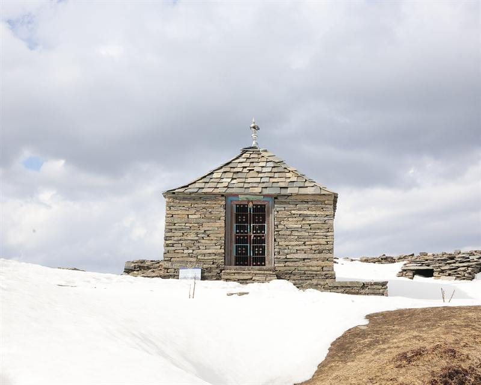

<title>The Himachal Issue</title>
<link rel="stylesheet" href="https://fonts.googleapis.com/css2?family=Instrument+Serif:ital@0;1&family=Manrope:wght@400;500;600;700;800&family=JetBrains+Mono:wght@400;500;700&display=swap">
<link rel="stylesheet" href="https://unpkg.com/leaflet@1.9.4/dist/leaflet.css" crossorigin="">
<style>
:root{
  --paper:#EEF2F5; --card:#FFFFFF; --ink:#101A2E; --ink-2:#4F5B70; --ink-3:#7E8A9E;
  --line:#D5DDE7; --line-2:#E5EBF1;
  --accent:#EF7B6B; --accent-ink:#B9463A; --accent-soft:#FBE4DE;
  --gold:#D9A036; --pine:#2F5D50; --dusk:#2E3F6E; --dusk-soft:#DFE5F3;
  --shadow:0 1px 2px rgba(16,26,46,.06),0 14px 34px -18px rgba(16,26,46,.28);
  --display:"Instrument Serif","Iowan Old Style",Georgia,"Times New Roman",serif;
  --sans:"Manrope","Segoe UI",system-ui,-apple-system,sans-serif;
  --mono:"JetBrains Mono",ui-monospace,"SF Mono",Menlo,Consolas,monospace;
  --gutter:clamp(16px,4vw,40px);
  --nav-h:54px;
}
@media (prefers-color-scheme:dark){
  :root:not([data-theme="light"]){
    --paper:#0C1322; --card:#141D31; --ink:#E9EDF5; --ink-2:#A9B4C8; --ink-3:#7F8BA3;
    --line:#26314A; --line-2:#1C263B;
    --accent:#F28E7E; --accent-ink:#F7A899; --accent-soft:#3A2530;
    --gold:#F1BE5B; --pine:#7BB8A2; --dusk:#93A5D8; --dusk-soft:#1C2745;
    --shadow:0 1px 2px rgba(0,0,0,.3),0 14px 34px -18px rgba(0,0,0,.6);
  }
}
:root[data-theme="dark"]{
  --paper:#0C1322; --card:#141D31; --ink:#E9EDF5; --ink-2:#A9B4C8; --ink-3:#7F8BA3;
  --line:#26314A; --line-2:#1C263B;
  --accent:#F28E7E; --accent-ink:#F7A899; --accent-soft:#3A2530;
  --gold:#F1BE5B; --pine:#7BB8A2; --dusk:#93A5D8; --dusk-soft:#1C2745;
  --shadow:0 1px 2px rgba(0,0,0,.3),0 14px 34px -18px rgba(0,0,0,.6);
}
html{scroll-behavior:auto;scroll-padding-top:calc(var(--nav-h) + 12px);overflow-anchor:none}
body{margin:0;background:var(--paper);color:var(--ink);font-family:var(--sans);font-size:16.5px;line-height:1.6;-webkit-font-smoothing:antialiased;overflow-x:clip}
*,*::before,*::after{box-sizing:border-box}
img{max-width:100%;display:block}
a{color:inherit}
button{font:inherit;color:inherit}
:focus-visible{outline:2px solid var(--accent);outline-offset:3px;border-radius:4px}
.wrap{width:min(1180px,100% - 2*var(--gutter));margin-inline:auto}
.eyebrow{font:600 11px/1 var(--mono);letter-spacing:.14em;text-transform:uppercase;color:var(--ink-2)}
.h-display{font-family:var(--display);font-weight:400;letter-spacing:-.02em;line-height:.95;text-wrap:balance}
.h-display em{font-style:italic;color:var(--accent-ink)}
.ital{font-family:var(--display);font-style:italic;font-weight:400}
h1,h2,h3,h4,p{margin:0}

/* ---------- COVER ---------- */
.cover{position:relative;min-height:clamp(620px,94svh,940px);display:flex;flex-direction:column;background:#0B1230;color:#F6F1E8;overflow:hidden;isolation:isolate;contain:paint}
.cover .L{position:absolute;inset:0;width:100%;height:100%;display:block;pointer-events:none}
.cover .defs{position:absolute;width:0;height:0;overflow:hidden}
.cover .scrim{position:absolute;inset:auto 0 0 0;height:56%;background:linear-gradient(to top,rgba(8,12,30,.94) 0%,rgba(8,12,30,.6) 40%,rgba(8,12,30,0) 100%);pointer-events:none}
.cover .topbar{position:relative;padding-top:calc(env(safe-area-inset-top,0px) + 14px);z-index:2}
.cover .topbar .in{display:flex;justify-content:space-between;align-items:center;gap:12px;font:500 10.5px/1.4 var(--mono);letter-spacing:.14em;text-transform:uppercase;color:rgba(246,241,232,.78);border-bottom:1px solid rgba(246,241,232,.22);padding-bottom:12px}
.cover .topbar .in span:last-child{text-align:right}
.cover .mast{position:relative;padding-top:clamp(10px,2vh,22px);pointer-events:none;will-change:transform,opacity;z-index:2}
.cover .mast h1{font-family:var(--display);font-weight:400;font-size:clamp(72px,15vw,210px);line-height:.84;letter-spacing:-.035em;color:#F6F1E8;text-shadow:0 18px 60px rgba(11,18,48,.55)}
.cover .mast h1 span{display:block;font-family:var(--sans);font-weight:500;font-size:clamp(14px,1.5vw,19px);letter-spacing:.01em;line-height:1.3;color:rgba(246,241,232,.85);margin-top:.55em;text-shadow:none;max-width:40ch}
.cover .lines{position:relative;margin-top:auto;padding-top:clamp(40px,8vh,90px);padding-bottom:calc(env(safe-area-inset-bottom,0px) + clamp(22px,4vh,44px));will-change:transform,opacity;z-index:2}
.cover .lines .kicker{font:600 11px/1.4 var(--mono);letter-spacing:.16em;text-transform:uppercase;color:#F6C27A;margin-bottom:12px}
.cover .lines h2{font-family:var(--display);font-weight:400;font-size:clamp(34px,5.2vw,70px);line-height:.96;letter-spacing:-.025em;max-width:17ch;text-wrap:balance}
.cover .lines h2 em{font-style:italic;color:#F6C27A}
.cover .lines .dek{font-family:var(--sans);font-size:clamp(15px,1.25vw,18px);line-height:1.55;color:rgba(246,241,232,.84);max-width:56ch;margin-top:14px}
.cover .inside{display:flex;flex-wrap:wrap;gap:8px 22px;margin-top:20px;padding-top:14px;border-top:1px solid rgba(246,241,232,.22);font:500 12px/1.5 var(--mono);letter-spacing:.04em;color:rgba(246,241,232,.82)}
.cover .inside a{color:#F6F1E8;text-decoration:none;border-bottom:1px solid rgba(246,241,232,.35);padding-bottom:1px}
.cover .inside a:hover{border-color:#F6C27A;color:#F6C27A}
.cover .inside .lbl{color:#F6C27A;font-weight:700}
@media (max-width:640px){
  .cover .inside{gap:6px 14px;font-size:11px}
  .cover .inside .lbl{flex-basis:100%}
  .cover .topbar .in span:last-child{display:none}
}
@media (max-height:720px) and (min-width:641px){
  .cover .mast h1{font-size:clamp(56px,10vw,120px)}
  .cover .mast h1 span{display:none}
  .cover .lines h2{font-size:clamp(26px,3.8vw,44px)}
  .cover .lines .dek{display:none}
  .cover .inside{margin-top:12px;padding-top:10px}
}

/* ambient (time-based) motion — cheap, few animations */
@keyframes tw{0%,100%{opacity:1}50%{opacity:.35}}
.cover .sg{animation:tw var(--d,5s) ease-in-out var(--dl,0s) infinite}
@keyframes drift{from{transform:translateX(0)}to{transform:translateX(var(--dx,60px))}}
.cover .cloud{animation:drift var(--dd,90s) linear infinite alternate}
@keyframes wave{0%,100%{transform:rotate(-4deg)}50%{transform:rotate(4deg)}}
.cover .flag{transform-box:fill-box;transform-origin:50% 0%;animation:wave var(--wd,3.4s) ease-in-out var(--wdl,0s) infinite}
@media (prefers-reduced-motion:reduce){.cover *{animation:none !important}}

/* The bus travels on its own clock; page scrolling never controls the illustration. */
.cover .bus{offset-path:path("M-30 905 C 180 870, 260 790, 470 785 S 760 830, 900 790 S 1180 730, 1320 775 S 1540 810, 1640 790");offset-distance:14%;offset-rotate:auto;transform-box:fill-box;offset-anchor:60px 84px;animation:bus-journey 24s ease-in-out infinite alternate}
@keyframes bus-journey{to{offset-distance:76%}}
@media (max-aspect-ratio:4/5){.cover .bus{offset-distance:40%;animation-name:bus-journey-mobile}}
@keyframes bus-journey-mobile{to{offset-distance:64%}}
@media (prefers-reduced-motion:reduce){.cover .bus{animation:none}}

/* ---------- FOLIO / NAV ---------- */
.folio{position:sticky;top:env(safe-area-inset-top,0px);z-index:50;background:color-mix(in srgb,var(--paper) 94%,transparent);border-bottom:1px solid var(--line)}
@supports not (background:color-mix(in srgb,red 50%,blue)){.folio{background:var(--paper)}}
.folio .in{display:flex;align-items:center;gap:16px;height:var(--nav-h)}
.folio .brand{font-family:var(--display);font-size:24px;letter-spacing:-.02em;text-decoration:none;white-space:nowrap;display:flex;align-items:baseline;gap:10px;line-height:1}
.folio .brand small{font:500 10px/1 var(--mono);letter-spacing:.12em;text-transform:uppercase;color:var(--ink-3)}
.folio .tabs{display:flex;gap:4px;overflow-x:auto;scrollbar-width:none;-webkit-overflow-scrolling:touch;margin-left:auto;padding:4px 0;mask-image:linear-gradient(to right,transparent,black 14px,black calc(100% - 14px),transparent)}
.folio .tabs::-webkit-scrollbar{display:none}
.folio .tab{font:600 11px/1 var(--mono);letter-spacing:.06em;text-transform:uppercase;padding:9px 12px;border-radius:999px;color:var(--ink-2);text-decoration:none;white-space:nowrap;border:1px solid transparent;transition:background .2s,color .2s}
.folio .tab:hover{border-color:var(--line)}
.folio .tab.active{background:var(--ink);color:var(--paper)}
@media (max-width:640px){.folio .brand small{display:none}.folio .brand{font-size:22px}}

/* ---------- SECTIONS ---------- */
.section{padding-block:clamp(56px,9vw,112px)}
.section-head{display:grid;grid-template-columns:1fr;gap:14px;margin-bottom:clamp(28px,4vw,48px)}
.section-head h2{font-size:clamp(40px,5.8vw,72px)}
.section-head .lede{font-size:clamp(20px,1.7vw,25px);line-height:1.35;color:var(--ink-2);max-width:56ch}
@media (min-width:900px){.section-head{grid-template-columns:1.1fr 1fr;align-items:end}}

/* ---------- CONTENTS ---------- */
.peaks{margin:8px 0 34px;padding:22px clamp(14px,2vw,28px) 14px;background:var(--card);border:1px solid var(--line);border-radius:14px;box-shadow:var(--shadow)}
.peaks .cap{display:flex;justify-content:space-between;gap:12px;flex-wrap:wrap;font:500 11px/1.4 var(--mono);letter-spacing:.08em;text-transform:uppercase;color:var(--ink-3);margin-bottom:6px}
.peaks .scroller{overflow-x:auto;scrollbar-width:thin}
.peaks svg{width:100%;min-width:640px;height:auto;display:block}
.peaks .pk{cursor:pointer}
.peaks .pk .m{fill:var(--dusk-soft);stroke:var(--dusk);stroke-width:1.5;transition:fill .25s}
.peaks .pk:hover .m,.peaks .pk:focus .m{fill:var(--accent-soft);stroke:var(--accent-ink)}
.peaks .pk text{fill:var(--ink);font-family:var(--sans);font-weight:700;font-size:14px;letter-spacing:-.01em}
.peaks .pk .alt{font-family:var(--mono);font-weight:500;font-size:11px;fill:var(--ink-2);letter-spacing:.04em}
.peaks .base{stroke:var(--line);stroke-dasharray:3 5}
.peaks .baselbl{font:500 10px var(--mono);fill:var(--ink-3);letter-spacing:.08em}
.sorts{display:flex;flex-wrap:wrap;gap:8px;align-items:center;margin-bottom:22px}
.sorts .lbl{font:600 11px/1 var(--mono);letter-spacing:.12em;text-transform:uppercase;color:var(--ink-3);margin-right:6px}
.chip{font:600 11.5px/1 var(--mono);letter-spacing:.06em;text-transform:uppercase;padding:9px 13px;border-radius:999px;border:1px solid var(--line);background:transparent;cursor:pointer;color:var(--ink-2);transition:all .2s}
.chip:hover{border-color:var(--ink-2)}
.chip[aria-pressed="true"]{background:var(--ink);color:var(--paper);border-color:var(--ink)}
.cards{display:grid;grid-template-columns:repeat(auto-fill,minmax(280px,1fr));gap:22px}
.card{background:var(--card);border:1px solid var(--line);border-radius:14px;overflow:hidden;text-decoration:none;display:flex;flex-direction:column;box-shadow:var(--shadow);transition:transform .35s cubic-bezier(.2,.7,.2,1),box-shadow .35s}
.card:hover{transform:translateY(-4px);box-shadow:0 2px 3px rgba(16,26,46,.06),0 26px 48px -22px rgba(16,26,46,.4)}
.card .ph{aspect-ratio:4/3;overflow:hidden;background:var(--dusk-soft)}
.card .ph img{width:100%;height:100%;object-fit:cover}
.card .body{padding:18px 18px 16px;display:flex;flex-direction:column;gap:10px;flex:1}
.card .name{font-family:var(--display);font-size:34px;letter-spacing:-.02em;line-height:.95}
.card .sub{font:500 10.5px/1.4 var(--mono);letter-spacing:.1em;text-transform:uppercase;color:var(--ink-3)}
.card .tag{font-family:var(--display);font-style:italic;color:var(--ink-2);font-size:19px;line-height:1.3}
.card .stats{display:grid;grid-template-columns:1fr 1fr;gap:8px 14px;margin-top:auto;padding-top:14px;border-top:1px solid var(--line-2)}
.card .stat b{display:block;font:500 9.5px/1 var(--mono);letter-spacing:.12em;text-transform:uppercase;color:var(--ink-3);margin-bottom:5px}
.card .stat span{font:700 13.5px/1.2 var(--sans);font-variant-numeric:tabular-nums}
.card .go{font:600 11px/1 var(--mono);letter-spacing:.1em;text-transform:uppercase;color:var(--accent-ink);margin-top:6px}

/* ---------- PLAN STRIP ---------- */
.plan{background:var(--card);border-top:1px solid var(--line);border-bottom:1px solid var(--line)}
.plan .head{display:flex;flex-wrap:wrap;justify-content:space-between;align-items:end;gap:18px;margin-bottom:28px}
.plan h2{font-size:clamp(34px,4.2vw,54px)}
.plan .head p{color:var(--ink-2);max-width:52ch;font-size:16px}
.switch{display:inline-flex;align-items:center;gap:12px;background:transparent;border:1px solid var(--line);border-radius:999px;padding:8px 14px 8px 8px;cursor:pointer;font:600 11.5px/1 var(--mono);letter-spacing:.06em;text-transform:uppercase;color:var(--ink-2);transition:border-color .2s}
.switch:hover{border-color:var(--ink-2)}
.switch .knob{width:38px;height:22px;border-radius:999px;background:var(--line);position:relative;transition:background .25s;flex:none}
.switch .knob::after{content:"";position:absolute;top:3px;left:3px;width:16px;height:16px;border-radius:50%;background:var(--card);box-shadow:0 1px 2px rgba(0,0,0,.25);transition:transform .25s cubic-bezier(.2,.7,.2,1)}
.switch[aria-checked="true"]{color:var(--ink)}
.switch[aria-checked="true"] .knob{background:var(--accent)}
.switch[aria-checked="true"] .knob::after{transform:translateX(16px)}
.steps{display:grid;grid-template-columns:repeat(5,minmax(0,1fr));gap:18px}
body.ext .steps{grid-template-columns:repeat(6,minmax(0,1fr))}
.steps .step{position:relative;padding:16px 10px 6px 0;border-top:2px solid var(--line)}
.steps .step::before{content:"";position:absolute;top:-6px;left:0;width:10px;height:10px;border-radius:50%;background:var(--ink);border:2px solid var(--card)}
.steps .step.s-night::before{background:var(--dusk)}
.steps .step.s-day::before{background:var(--gold)}
.steps .step.s-home::before{background:var(--accent)}
.steps .step.s-ext{opacity:.4;transition:opacity .3s}
.steps .step .d{font:600 10.5px/1.4 var(--mono);letter-spacing:.1em;text-transform:uppercase;color:var(--ink-3);margin-bottom:8px}
.steps .step .t{font:700 17px/1.2 var(--sans);letter-spacing:-.015em}
.steps .step .n{font-size:14.5px;color:var(--ink-2);margin-top:6px;line-height:1.45}
body.ext .steps .step.s-ext{opacity:1}
.steps .step.s-tue{display:none}
body.ext .steps .step.s-tue{display:block}
.steps .step .alt-on{display:none}
body.ext .steps .step .alt-on{display:inline}
body.ext .steps .step .alt-off{display:none}
@media (max-width:820px){
  .steps,body.ext .steps{grid-template-columns:1fr;gap:0;border-left:2px solid var(--line);margin-left:6px;padding-left:20px}
  .steps .step{border-top:0;padding:8px 0 16px}
  .steps .step::before{left:-27px;top:12px}
}

/* ---------- FEATURE SPREADS ---------- */
.feature{padding-top:clamp(30px,5vw,64px)}
.feature + .feature{border-top:1px solid var(--line)}
.feature .hero{position:relative;height:clamp(440px,74vh,780px);overflow:hidden;background:var(--dusk-soft)}
.feature .hero img{width:100%;height:100%;object-fit:cover}
.feature .hero .veil{position:absolute;inset:0;background:linear-gradient(to top,rgba(10,15,32,.88) 0%,rgba(10,15,32,.4) 42%,rgba(10,15,32,0) 70%)}
.feature .hero .title{position:absolute;left:0;right:0;bottom:0;color:#F6F1E8;padding-bottom:clamp(22px,3.5vw,44px)}
.feature .hero .title .where{font:600 10.5px/1.6 var(--mono);letter-spacing:.14em;text-transform:uppercase;color:#F6C27A;display:flex;flex-wrap:wrap;gap:4px 16px;margin-bottom:10px}
.feature .hero .title h2{font-size:clamp(52px,10.5vw,148px);line-height:.88;letter-spacing:-.03em;text-shadow:0 20px 50px rgba(0,0,0,.35)}
.feature .hero .title .tag{font-family:var(--display);font-style:italic;font-size:clamp(20px,2.3vw,31px);line-height:1.25;margin-top:14px;max-width:32ch;color:rgba(246,241,232,.92)}
.feature .hero .credit{position:absolute;right:var(--gutter);top:14px;font:500 10px/1 var(--mono);letter-spacing:.06em;color:rgba(246,241,232,.75);text-decoration:none;background:rgba(10,15,32,.45);padding:6px 9px;border-radius:4px}
.feature .hero .credit:hover{color:#F6F1E8}
.feature .intro{display:grid;grid-template-columns:1fr;gap:28px;padding-block:clamp(32px,5vw,64px) clamp(24px,3vw,40px)}
@media (min-width:900px){.feature .intro{grid-template-columns:minmax(0,7fr) minmax(0,5fr);gap:clamp(30px,5vw,80px)}}
.feature .intro .lead{font-size:clamp(18px,1.4vw,20px);line-height:1.6;max-width:62ch}
.feature .intro .lead::first-letter{font-family:var(--display);font-size:4.6em;float:left;line-height:.78;padding:.08em .12em 0 0;color:var(--accent-ink);letter-spacing:0}
.feature .intro .lead + p{margin-top:16px;color:var(--ink-2);font-size:16.5px;max-width:62ch}
.glance{display:grid;grid-template-columns:1fr 1fr;gap:1px;background:var(--line);border:1px solid var(--line);border-radius:12px;overflow:hidden;align-self:start}
.glance div{background:var(--card);padding:14px 16px}
.glance b{display:block;font:500 9.5px/1 var(--mono);letter-spacing:.12em;text-transform:uppercase;color:var(--ink-3);margin-bottom:7px}
.glance span{font:700 15px/1.3 var(--sans);letter-spacing:-.01em;display:block}
.glance .wide{grid-column:1/-1}
.two{display:grid;grid-template-columns:1fr;gap:28px;padding-block:clamp(10px,2vw,24px) clamp(28px,4vw,56px)}
@media (min-width:900px){.two{grid-template-columns:minmax(0,7fr) minmax(0,5fr);gap:clamp(30px,5vw,80px);align-items:start}}

/* boarding pass */
.pass{position:relative;display:grid;grid-template-columns:1fr;background:var(--card);border:1px solid var(--line);border-radius:14px;box-shadow:var(--shadow);overflow:hidden;font-family:var(--mono)}
@media (min-width:640px){.pass{grid-template-columns:minmax(0,1fr) 200px}}
.pass .main{padding:20px 22px 22px;position:relative;min-width:0}
.pass .stub{padding:20px 20px 22px;background:var(--dusk-soft);position:relative;border-top:1px dashed var(--ink-3);min-width:0}
@media (min-width:640px){.pass .stub{border-top:0;border-left:1px dashed var(--ink-3)}
  .pass .stub::before,.pass .stub::after{content:"";position:absolute;left:-10px;width:20px;height:20px;border-radius:50%;background:var(--paper);border:1px solid var(--line)}
  .pass .stub::before{top:-11px}.pass .stub::after{bottom:-11px}}
.pass .hd{display:flex;justify-content:space-between;align-items:center;gap:10px;font:600 10px/1.3 var(--mono);letter-spacing:.14em;text-transform:uppercase;color:var(--ink-3);margin-bottom:16px}
.pass .hd em{font-style:normal;color:var(--accent-ink);text-align:right}
.pass .route{display:grid;grid-template-columns:1fr auto 1fr;gap:10px;align-items:center;margin-bottom:18px}
.pass .route .code{font:700 clamp(30px,3.6vw,42px)/1 var(--mono);letter-spacing:-.03em}
.pass .route .city{font:500 10.5px/1.4 var(--mono);letter-spacing:.06em;text-transform:uppercase;color:var(--ink-2);margin-top:6px}
.pass .route .to{text-align:right}
.pass .route .arrow{color:var(--ink-3);font-size:22px;display:flex;flex-direction:column;align-items:center;gap:6px}
.pass .route .arrow small{font:500 9.5px/1 var(--mono);letter-spacing:.1em;color:var(--ink-3);white-space:nowrap}
.pass .grid{display:grid;grid-template-columns:repeat(2,minmax(0,1fr));gap:14px 16px}
@media (min-width:480px){.pass .grid{grid-template-columns:repeat(3,minmax(0,1fr))}}
.pass .f b{display:block;font:500 9.5px/1 var(--mono);letter-spacing:.12em;text-transform:uppercase;color:var(--ink-3);margin-bottom:5px}
.pass .f span{font:600 13px/1.45 var(--mono);font-variant-numeric:tabular-nums;overflow-wrap:anywhere}
.pass .f.span2{grid-column:1/-1}
@media (min-width:480px){.pass .f.span2{grid-column:span 2}}
.pass .note{margin-top:16px;padding-top:14px;border-top:1px solid var(--line-2);font-family:var(--sans);font-size:14.5px;line-height:1.5;color:var(--ink-2)}
.pass .stub .f{margin-bottom:14px}
.pass .stub .f span{font-size:12.5px}
.pass .barcode{height:44px;margin-top:6px;background:repeating-linear-gradient(90deg,var(--ink) 0 2px,transparent 2px 4px,var(--ink) 4px 5px,transparent 5px 8px,var(--ink) 8px 11px,transparent 11px 13px,var(--ink) 13px 14px,transparent 14px 17px);opacity:.75}
.pass .ret-on{display:none}
body.ext .pass .ret-on{display:inline}
body.ext .pass .ret-off{display:none}

/* photo card */
.ph2{position:relative;border-radius:14px;overflow:hidden;box-shadow:var(--shadow);background:var(--dusk-soft);margin:0}
.ph2 img{width:100%;height:auto;aspect-ratio:3/2;object-fit:cover}
.ph2 figcaption{position:absolute;left:0;right:0;bottom:0;padding:12px 14px;font-family:var(--display);font-style:italic;font-size:17px;line-height:1.3;color:#F6F1E8;background:linear-gradient(to top,rgba(10,15,32,.88),rgba(10,15,32,0))}
.ph2 figcaption a{font:500 10px/1 var(--mono);letter-spacing:.06em;color:rgba(246,241,232,.75);text-decoration:none;font-style:normal;display:block;margin-top:5px}

/* itinerary */
.itin{padding-block:clamp(10px,2vw,24px) clamp(28px,4vw,56px)}
.itin .hd{display:flex;flex-wrap:wrap;align-items:end;justify-content:space-between;gap:14px;margin-bottom:22px}
.itin h3{font-size:clamp(30px,3.4vw,44px)}
.itin .hd p{font-family:var(--display);font-style:italic;color:var(--ink-2);font-size:19px}
.days{display:flex;gap:6px;overflow-x:auto;scrollbar-width:none;padding-bottom:4px;margin-bottom:26px}
.days::-webkit-scrollbar{display:none}
.day{font:600 11.5px/1.35 var(--mono);letter-spacing:.06em;text-transform:uppercase;padding:9px 14px;border-radius:10px;border:1px solid var(--line);background:var(--card);cursor:pointer;color:var(--ink-2);white-space:nowrap;text-align:left;transition:all .2s}
.day small{display:block;font-weight:500;letter-spacing:.04em;text-transform:none;color:var(--ink-3);font-size:10.5px}
.day:hover{border-color:var(--ink-2)}
.day[aria-selected="true"]{background:var(--ink);color:var(--paper);border-color:var(--ink)}
.day[aria-selected="true"] small{color:color-mix(in srgb,var(--paper) 70%,transparent)}
.day.opt{border-style:dashed}
body.ext .day.opt{border-style:solid}
.day .opt-on{display:none}
body.ext .day .opt-on{display:inline}
body.ext .day .opt-off{display:none}
.tl{list-style:none;margin:0;padding:0;position:relative}
.tl::before{content:"";position:absolute;left:78px;top:6px;bottom:6px;width:1px;background:var(--line)}
@media (max-width:520px){.tl::before{left:58px}}
.tl li{display:grid;grid-template-columns:64px 28px minmax(0,1fr);gap:0 10px;padding:12px 0;align-items:start}
@media (max-width:520px){.tl li{grid-template-columns:48px 20px minmax(0,1fr)}}
.tl .t{font:600 12.5px/1.6 var(--mono);color:var(--ink-2);font-variant-numeric:tabular-nums;text-align:right;padding-top:2px}
.tl .dot{width:9px;height:9px;border-radius:50%;background:var(--card);border:2px solid var(--ink);justify-self:center;margin-top:7px}
.tl li.hi .dot{background:var(--accent);border-color:var(--accent)}
.tl .w{font:700 16.5px/1.3 var(--sans);letter-spacing:-.015em}
.tl .n{color:var(--ink-2);font-size:15.5px;line-height:1.5;margin-top:3px;max-width:62ch}
.tl-wrap{animation:fadein .35s ease both}
@keyframes fadein{from{opacity:0;transform:translateY(6px)}to{opacity:1;transform:none}}
.daynote{font-family:var(--display);font-style:italic;color:var(--ink-2);margin-bottom:8px;font-size:19px;line-height:1.35;max-width:60ch}

/* the edit */
.edit{padding-block:clamp(10px,2vw,24px) clamp(28px,4vw,56px)}
.edit h3,.stay h3,.eat h3,.notes h3{font-size:clamp(28px,2.8vw,36px);margin-bottom:6px}
.edit .sub{font-family:var(--display);font-style:italic;color:var(--ink-2);margin-bottom:22px;font-size:19px}
.edit ul{list-style:none;margin:0;padding:0;display:grid;grid-template-columns:1fr;border-top:1px solid var(--line)}
@media (min-width:760px){.edit ul{grid-template-columns:1fr 1fr;column-gap:40px}}
.edit li{display:grid;grid-template-columns:70px minmax(0,1fr);gap:14px;padding:14px 0;border-bottom:1px solid var(--line);align-items:baseline}
.edit li .k{font:600 10px/1.6 var(--mono);letter-spacing:.1em;text-transform:uppercase;color:var(--accent-ink)}
.edit li .k.act{color:var(--pine)}
.edit li .k.mkt{color:var(--gold)}
.edit li b{font:700 16px/1.3 var(--sans);letter-spacing:-.015em;display:block;margin-bottom:2px}
.edit li span{color:var(--ink-2);font-size:15px;line-height:1.5}

.cols{display:grid;grid-template-columns:1fr;gap:28px;padding-block:clamp(10px,2vw,24px) clamp(40px,6vw,80px)}
@media (min-width:900px){.cols{grid-template-columns:1fr 1fr 1.1fr;gap:clamp(24px,3vw,44px)}}
.cols ul{list-style:none;margin:14px 0 0;padding:0}
.cols li{padding:10px 0;border-top:1px solid var(--line-2);font-size:15.5px;line-height:1.5}
.cols li b{font:700 15.5px/1.35 var(--sans);letter-spacing:-.01em}
.cols li span{color:var(--ink-2)}
.cols li em{font-style:normal;font:500 10px/1 var(--mono);letter-spacing:.1em;text-transform:uppercase;color:var(--ink-3);margin-left:6px;white-space:nowrap}
.notes{background:var(--card);border:1px solid var(--line);border-radius:12px;padding:20px 22px 12px;background-image:repeating-linear-gradient(to bottom,transparent 0 27px,var(--line-2) 27px 28px);background-origin:content-box;background-position:0 8px}
.notes .hd{font:600 10.5px/1 var(--mono);letter-spacing:.14em;text-transform:uppercase;color:var(--ink-3);display:flex;justify-content:space-between;gap:10px;margin-bottom:10px}
.notes h3{font-size:28px;margin-bottom:8px}
.notes ul{margin-top:6px}
.notes li{border-top:0;padding:6px 0;font-size:15px;line-height:28px}
.notes .wx{display:grid;grid-template-columns:repeat(3,1fr);gap:10px;margin:8px 0 6px;padding:10px 0;border-block:1px solid var(--line)}
.notes .wx b{display:block;font:500 9.5px/1 var(--mono);letter-spacing:.12em;text-transform:uppercase;color:var(--ink-3);margin-bottom:5px}
.notes .wx span{font:700 14.5px/1.2 var(--sans);font-variant-numeric:tabular-nums}

/* ---------- BACK PAGE ---------- */
.back{background:#0B1230;color:#F6F1E8;padding-block:clamp(56px,9vw,112px)}
.back .eyebrow{color:#F6C27A}
.back h2{font-size:clamp(40px,5.8vw,72px);color:#F6F1E8;margin:14px 0 10px}
.back .lede{font-family:var(--display);font-style:italic;color:rgba(246,241,232,.82);font-size:clamp(20px,1.7vw,25px);line-height:1.35;max-width:52ch}
.back .grid{display:grid;grid-template-columns:1fr;gap:26px;margin-top:40px}
@media (min-width:900px){.back .grid{grid-template-columns:1.2fr 1fr 1fr}}
.back .box{border:1px solid rgba(246,241,232,.18);border-radius:12px;padding:20px 22px}
.back .box h3{font:700 18px/1.2 var(--sans);letter-spacing:-.02em;color:#F6F1E8;margin-bottom:12px;display:flex;justify-content:space-between;align-items:baseline;gap:10px;flex-wrap:wrap}
.back .box h3 small{font:500 10px/1 var(--mono);letter-spacing:.12em;text-transform:uppercase;color:#F6C27A}
.back ul{list-style:none;margin:0;padding:0}
.back li{padding:9px 0;border-top:1px solid rgba(246,241,232,.12);font-size:15px;line-height:1.5;color:rgba(246,241,232,.88);display:grid;grid-template-columns:auto minmax(0,1fr);gap:12px}
.back li .when{font:600 10.5px/1.7 var(--mono);letter-spacing:.06em;color:#F6C27A;white-space:nowrap;min-width:62px}
.back li.one{grid-template-columns:1fr}
.back .pack{columns:2;column-gap:20px}
@media (max-width:420px){.back .pack{columns:1}}
.back .pack li{break-inside:avoid;grid-template-columns:1fr;font-size:14.5px;padding:6px 0}
.back .fine{margin-top:40px;padding-top:22px;border-top:1px solid rgba(246,241,232,.18);font-size:13.5px;line-height:1.6;color:rgba(246,241,232,.62);max-width:80ch}

/* Issue art direction: luminous alpine blue, warm bus-light, and oversized folio type. */
:root{
  --paper:#EAF1F5;--card:#FCFDFC;--ink:#11263A;--ink-2:#455D70;--ink-3:#647E91;
  --line:#C8D6DF;--line-2:#DCE6EB;--accent:#FF8667;--accent-ink:#AD482D;
  --accent-soft:#FFE5DA;--dusk:#304F75;--dusk-soft:#D9E8F1;
  --shadow:0 6px 16px -12px rgba(13,42,65,.28),0 26px 55px -35px rgba(13,42,65,.32)
}
@media (prefers-color-scheme:dark){
  :root:not([data-theme="light"]){--paper:#0A1725;--card:#112237;--ink:#F2F7F8;--ink-2:#B8CAD4;--ink-3:#92A9B8;--line:#294056;--line-2:#20374C;--accent-ink:#FFAB90;--accent-soft:#51352F;--dusk-soft:#243E58}
}
:root[data-theme="dark"]{--paper:#0A1725;--card:#112237;--ink:#F2F7F8;--ink-2:#B8CAD4;--ink-3:#92A9B8;--line:#294056;--line-2:#20374C;--accent-ink:#FFAB90;--accent-soft:#51352F;--dusk-soft:#243E58}
.cover::after{content:"";position:absolute;inset:0;pointer-events:none;z-index:1;background:radial-gradient(ellipse at 75% 40%,rgba(255,190,112,.2),transparent 39%),linear-gradient(90deg,rgba(8,16,38,.26),transparent 66%)}
.cover .mast h1{letter-spacing:-.055em;text-transform:none}
.cover .lines{padding-top:clamp(24px,5vh,60px)}
.cover .lines h2{max-width:21ch}
.cover .inside{max-width:960px}
.cover-explore{display:inline-flex;align-items:center;gap:12px;margin-top:20px;color:#FFF4E8;text-decoration:none;font:700 11px/1 var(--mono);letter-spacing:.12em;text-transform:uppercase}
.cover-explore-icon{display:grid;place-items:center;width:36px;height:36px;border:1px solid rgba(255,244,232,.7);border-radius:50%;font:22px/1 var(--display);transition:transform .25s,background .25s}
.cover-explore:hover .cover-explore-icon{transform:translateY(4px);background:rgba(255,244,232,.16)}
@keyframes hero-enter{from{opacity:0;transform:translateY(22px)}to{opacity:1;transform:translateY(0)}}
.cover .mast{animation:hero-enter 1s .12s cubic-bezier(.2,.7,.2,1) both}
.cover .lines .kicker{animation:hero-enter .8s .45s ease-out both}
.cover .lines h2{animation:hero-enter .9s .58s ease-out both}
.cover .lines .dek{animation:hero-enter .9s .77s ease-out both}
.cover-explore{animation:hero-enter .8s .98s ease-out both}
.cover .inside{animation:hero-enter .8s 1.12s ease-out both}
.cover .l-dawn{animation:dawn-cycle 24s ease-in-out infinite alternate}
@keyframes dawn-cycle{from{opacity:.28}to{opacity:.86}}
.cover .constellation{animation:constellation-glow 7s ease-in-out infinite alternate}
@keyframes constellation-glow{from{opacity:.2}to{opacity:.72}}
.cover .aurora-band{transform-box:fill-box;transform-origin:center;animation:aurora-sway 18s ease-in-out infinite alternate}
.cover .aurora-two{animation-delay:-8s;animation-duration:23s}
@keyframes aurora-sway{from{transform:translate(-18px,12px) scaleY(.8);opacity:.45}to{transform:translate(32px,-18px) scaleY(1.18);opacity:.9}}
.cover .valley-lights{animation:valley-glimmer 4s ease-in-out infinite alternate}
@keyframes valley-glimmer{from{opacity:.35}to{opacity:1}}
.cover .bus-beam{animation:headlight-pulse 2.5s ease-in-out infinite alternate}
@keyframes headlight-pulse{from{opacity:.45}to{opacity:1}}
.cover-route{position:absolute;right:max(var(--gutter),calc((100vw - 1180px)/2));top:34%;z-index:2;width:min(300px,29vw);padding:18px 20px 16px;color:#FFF7E9;border:1px solid rgba(255,247,233,.35);border-radius:16px;background:linear-gradient(140deg,rgba(23,31,64,.74),rgba(26,35,67,.38));box-shadow:0 20px 70px rgba(5,10,30,.28);backdrop-filter:blur(12px);-webkit-backdrop-filter:blur(12px)}
.cover-route{animation:hero-enter .9s .85s ease-out both}
.cover-route-top{display:flex;justify-content:space-between;gap:10px;font:700 9px/1.3 var(--mono);letter-spacing:.12em;color:#F6C27A}
.cover-route-top span:last-child{color:rgba(255,247,233,.72)}
.cover-route-track{display:flex;align-items:center;gap:0;margin:17px 3px 10px}
.cover-route-dot{width:10px;height:10px;flex:none;border-radius:50%;border:2px solid #FFE4AE;box-shadow:0 0 0 4px rgba(255,228,174,.13)}
.cover-route-dot.end{background:#FFE4AE;box-shadow:0 0 18px rgba(255,228,174,.8)}
.cover-route-line{position:relative;flex:1;height:1px;margin:0 6px;background:repeating-linear-gradient(90deg,rgba(255,247,233,.67) 0 6px,transparent 6px 12px)}
.cover-route-line::after{content:"";position:absolute;top:-3px;left:0;width:7px;height:7px;border-radius:50%;background:#FFF7E9;box-shadow:0 0 10px 4px rgba(255,209,145,.55);animation:route-travel 6s ease-in-out infinite}
.cover-route-stops{display:flex;justify-content:space-between;gap:12px;font:500 10px/1.35 var(--mono);color:rgba(255,247,233,.74)}
.cover-route-stops span:last-child{text-align:right}
.cover-route-stops strong{display:block;font:400 28px/1 var(--display);color:#FFF7E9;letter-spacing:-.02em;margin-bottom:3px}
.cover-route-foot{margin-top:16px;padding-top:10px;border-top:1px solid rgba(255,247,233,.2);font:500 11px/1.4 var(--sans);color:rgba(255,247,233,.8)}
@keyframes route-travel{0%,8%{left:0;opacity:0}16%{opacity:1}80%{left:calc(100% - 7px);opacity:1}92%,100%{left:calc(100% - 7px);opacity:0}}
.cover .meteor{opacity:0;animation:meteor-pass 9s ease-out infinite}
.cover .meteor-b{animation-delay:4.5s;animation-duration:12s}
@keyframes meteor-pass{0%,13%{opacity:0;transform:translate(60px,-35px)}17%{opacity:.95}27%{opacity:0;transform:translate(-55px,35px)}100%{opacity:0}}
.cover .sun-ring{transform-box:fill-box;transform-origin:center;animation:sun-breathe 6s ease-in-out infinite}
.cover .sun-ring-two{animation-delay:1.5s}
@keyframes sun-breathe{0%,100%{opacity:.12;transform:scale(.92)}50%{opacity:.42;transform:scale(1.08)}}
.folio{backdrop-filter:blur(18px);-webkit-backdrop-filter:blur(18px);box-shadow:0 8px 24px -24px rgba(0,0,0,.7)}
.folio::after{content:"";position:absolute;left:0;bottom:-1px;width:100%;height:2px;background:linear-gradient(90deg,#FF8667,#F9C780,#8DBDCF);opacity:.8}
.folio .brand{font-size:27px;letter-spacing:-.05em}
.folio .tab.active{background:#17354A;color:#F7FBFB}
#contents{position:relative;isolation:isolate}
#contents::before{content:"";position:absolute;inset:0;z-index:-1;pointer-events:none;background:radial-gradient(ellipse 56% 26% at 84% 0%,rgba(105,173,203,.22),transparent),linear-gradient(90deg,rgba(37,84,111,.035) 1px,transparent 1px);background-size:auto,72px 72px;mask-image:linear-gradient(black,transparent 70%)}
.section-head h2{max-width:13ch;letter-spacing:-.045em}
.section-head .lede{font-size:clamp(20px,1.8vw,26px)}
.peaks{border-radius:22px;padding:clamp(18px,3vw,34px);box-shadow:0 28px 75px -55px rgba(13,42,65,.55);background:linear-gradient(150deg,var(--card),var(--dusk-soft))}
.cards{grid-template-columns:repeat(3,minmax(0,1fr));gap:clamp(14px,2vw,28px)}
.card{border-radius:20px;box-shadow:0 16px 40px -30px rgba(13,42,65,.46)}
.card .ph{position:relative;aspect-ratio:1.12;isolation:isolate}
.card .ph::after{content:"";position:absolute;inset:35% 0 0;background:linear-gradient(transparent,rgba(7,25,39,.64));pointer-events:none}
.card .ph img{transition:transform .6s cubic-bezier(.2,.7,.2,1),filter .6s;filter:saturate(1.04)}
.card:hover .ph img,.card:focus-visible .ph img{transform:scale(1.055);filter:saturate(1.18)}
.card-index{position:absolute;z-index:1;left:19px;bottom:13px;color:white;font:400 52px/.8 var(--display);letter-spacing:-.055em;text-shadow:0 2px 18px rgba(0,0,0,.3)}
.card-index i{font:600 10px/1 var(--mono);font-style:normal;letter-spacing:.08em;vertical-align:top;margin-left:3px}
.card .body{padding:22px;gap:12px}
.card .name{font-size:clamp(32px,3vw,43px)}
.card .go{display:flex;align-items:center;justify-content:space-between;border-top:1px solid var(--line-2);padding-top:15px;margin-top:2px}
.card .go::after{content:"↗";font:26px/1 var(--display);transition:transform .25s}
.card:hover .go::after{transform:translate(3px,-3px)}
.plan{position:relative;background:linear-gradient(120deg,var(--card),var(--dusk-soft))}
.plan .head{align-items:center}
.steps .step{border-top-color:var(--dusk);border-top-width:3px}
.steps .step::before{width:13px;height:13px;top:-8px;box-shadow:0 0 0 4px var(--card)}
.feature{padding-top:0}
.feature + .feature{border-top:0}
.feature .hero{height:clamp(430px,66svh,680px);isolation:isolate}
.feature .hero img{filter:saturate(1.12) contrast(1.04);object-position:center}
.feature .hero .veil{background:linear-gradient(to top,rgba(4,16,29,.94) 0%,rgba(5,22,39,.52) 37%,rgba(5,22,39,.06) 78%),linear-gradient(90deg,rgba(4,16,29,.2),transparent 55%)}
.hero-index{position:absolute;left:var(--gutter);top:20px;color:#fff;font:400 clamp(82px,12vw,180px)/.8 var(--display);letter-spacing:-.07em;opacity:.8;text-shadow:0 6px 30px rgba(0,0,0,.3)}
.hero-index span{font:600 13px/1 var(--mono);letter-spacing:.08em;vertical-align:top;margin-left:10px}
.feature .hero .title h2{font-size:clamp(72px,12vw,170px);max-width:11ch}
.feature .hero .title .where{padding-bottom:14px;border-bottom:1px solid rgba(255,255,255,.43);max-width:860px;margin-bottom:20px}
.feature .hero .title .tag{font-size:clamp(22px,2.6vw,34px)}
.feature .intro{padding-top:clamp(44px,6vw,76px)}
.feature .intro .lead{font-size:clamp(20px,1.6vw,23px);line-height:1.53}
.pass,.ph2,.glance,.notes{border-radius:18px}
.ph2 img{aspect-ratio:4/3}
.back{background:radial-gradient(ellipse at 85% 0%,#274968 0%,transparent 44%),#071927}
.back .box{border-radius:18px;background:rgba(255,255,255,.045);backdrop-filter:blur(8px)}
@media (max-width:900px){.cards{grid-template-columns:repeat(2,minmax(0,1fr))}.feature .hero .title h2{font-size:clamp(60px,11vw,116px)}}
@media (max-width:640px){
  .cards{grid-template-columns:1fr}.card .ph{aspect-ratio:1.25}.card .body{padding:18px 20px}
  .cover .mast h1{font-size:clamp(68px,16vw,110px)}
  .cover-route{position:relative;top:auto;right:auto;width:auto;margin:18px var(--gutter) 0;padding:11px 14px 12px;flex:none}
  .cover-route-track{margin:8px 3px 7px}
  .cover-route-stops strong{font-size:21px}
  .cover-route-foot{display:none}
  .cover .lines{padding-bottom:calc(env(safe-area-inset-bottom,0px) + 22px)}
  .cover-explore{margin-top:15px}
  .feature .hero{height:clamp(400px,62svh,560px)}
  .hero-index{font-size:82px;top:24px}
  .feature .hero .title h2{font-size:clamp(60px,17vw,98px)}
  .feature .hero .title .where{gap:3px 10px;font-size:9px}
  .feature .hero .title .tag{font-size:22px}
  .steps .step{border-top:0}
  .steps .step::before{top:12px;width:10px;height:10px;box-shadow:none}
}
@media (prefers-reduced-motion:reduce){.card .ph img,.cover-explore-icon,.card .go::after{transition:none}.cover-route-line::after,.cover .meteor,.cover .sun-ring{animation:none}}

/* Motion across the issue: one entrance per element, with no layout or scroll changes. */
.reading-progress{position:absolute;left:0;bottom:-2px;z-index:3;width:100%;height:3px;transform:scaleX(0);transform-origin:left center;background:linear-gradient(90deg,#ff8667,#f7c87d 50%,#96d7d4);box-shadow:0 0 12px rgba(255,182,127,.65);pointer-events:none}
@media (prefers-reduced-motion:no-preference){
  .motion-ready [data-rv]{transition:opacity .72s cubic-bezier(.2,.7,.2,1),transform .72s cubic-bezier(.2,.7,.2,1),box-shadow .35s;transition-delay:var(--rv-delay,0s)}
  .motion-ready [data-rv]:not(.in-view){opacity:0;transform:translate3d(0,25px,0) scale(.985)}
  .motion-ready .cards .card:nth-child(3n + 2){--rv-delay:.09s}
  .motion-ready .cards .card:nth-child(3n + 3){--rv-delay:.18s}
  .motion-ready .steps.in-view .step{animation:step-arrive .62s cubic-bezier(.2,.7,.2,1) both}
  .motion-ready .steps.in-view .step:nth-child(2){animation-delay:.1s}
  .motion-ready .steps.in-view .step:nth-child(3){animation-delay:.2s}
  .motion-ready .steps.in-view .step:nth-child(4){animation-delay:.3s}
  .motion-ready .steps.in-view .step:nth-child(5){animation-delay:.4s}
  .motion-ready .steps.in-view .step:nth-child(6){animation-delay:.5s}
  @keyframes step-arrive{from{opacity:0;transform:translateY(17px)}to{opacity:1;transform:none}}
}
.folio .tab{transition:background .25s,color .25s,transform .25s,border-color .25s,box-shadow .25s}
.folio .tab:hover{transform:translateY(-2px);box-shadow:0 5px 16px -10px rgba(12,37,58,.45)}
.folio .tab.active{box-shadow:0 4px 13px -7px rgba(12,37,58,.7)}
.cover .inside a{display:inline-block;transition:color .25s,border-color .25s,transform .25s}
.cover .inside a:hover,.cover .inside a:focus-visible{transform:translateY(-3px)}
.section-head .eyebrow,.plan .head .eyebrow,.back .eyebrow{color:var(--accent-ink)}
.peaks .pk .m{transform-box:fill-box;transform-origin:center bottom;transition:fill .3s,stroke .3s,transform .4s cubic-bezier(.2,.7,.2,1)}
.peaks .pk:hover .m,.peaks .pk:focus .m{transform:translateY(-7px) scale(1.025)}
.chip,.day,.switch{transition:transform .25s cubic-bezier(.2,.7,.2,1),box-shadow .25s,background .25s,color .25s,border-color .25s}
.chip:hover,.day:hover,.switch:hover{transform:translateY(-2px);box-shadow:0 10px 18px -14px rgba(11,39,61,.5)}
.chip:active,.day:active,.switch:active{transform:translateY(1px) scale(.98)}
.card .ph::before{content:"";position:absolute;inset:0;z-index:2;pointer-events:none;background:linear-gradient(112deg,transparent 34%,rgba(255,255,255,.24) 48%,transparent 62%);transform:translateX(-140%);transition:transform .85s ease}
.card:hover .ph::before,.card:focus-visible .ph::before{transform:translateX(140%)}
.card:focus-visible{transform:translateY(-4px);box-shadow:0 20px 48px -25px rgba(11,39,61,.48)}
.plan{overflow:hidden}
.plan::after{content:"";position:absolute;right:-15%;top:-45%;width:55%;aspect-ratio:1;border-radius:50%;pointer-events:none;background:radial-gradient(circle,rgba(125,190,207,.17),transparent 66%);animation:plan-glow 18s ease-in-out infinite alternate}
@keyframes plan-glow{to{transform:translate(-8%,10%) scale(1.22);opacity:.52}}
.steps .step::before{transition:transform .3s,box-shadow .3s}
.steps .step:hover::before{transform:scale(1.35);box-shadow:0 0 0 5px var(--card),0 0 0 9px var(--accent-soft)}
.feature .hero img{transition:transform 13s ease-out,filter .8s}
.feature.is-active .hero img{transform:scale(1.055);filter:saturate(1.18) contrast(1.05)}
.feature .hero .title .where span{display:inline-flex;align-items:center;gap:5px}
.feature .hero .title .where span + span::before{content:"✦";font-size:7px;color:#FFCE89;margin-right:8px}
.feature .hero .title .tag{transition:transform .45s,color .45s}
.feature .hero:hover .tag{transform:translateX(6px);color:#FFF7E8}
.hero-index{transition:transform .55s,opacity .55s}
.feature .hero:hover .hero-index{transform:translateY(6px);opacity:1}
@media (max-width:640px){.feature .hero .credit{max-width:46%;font-size:8px;line-height:1.25;text-align:right;overflow-wrap:anywhere}}
.glance div{transition:background .3s,padding-left .3s}
.glance div:hover{background:var(--accent-soft);padding-left:20px}
.pass{transition:transform .35s cubic-bezier(.2,.7,.2,1),box-shadow .35s,border-color .35s}
.pass:hover{transform:translateY(-4px);box-shadow:0 26px 56px -32px rgba(13,42,65,.55);border-color:var(--accent)}
.pass .barcode{transition:opacity .3s,transform .4s}
.pass:hover .barcode{opacity:1;transform:scaleY(1.12)}
.ph2 img{transition:transform .75s cubic-bezier(.2,.7,.2,1),filter .75s}
.ph2:hover img{transform:scale(1.045);filter:saturate(1.14)}
.ph2 figcaption{transition:padding-bottom .4s}
.ph2:hover figcaption{padding-bottom:20px}
.tl li{border-radius:10px;transition:background .25s,transform .25s}
.tl li:hover{background:color-mix(in srgb,var(--dusk-soft) 52%,transparent);transform:translateX(5px)}
.tl .dot{transition:transform .25s,box-shadow .25s}
.tl li:hover .dot{transform:scale(1.4);box-shadow:0 0 0 5px var(--accent-soft)}
.edit li,.cols li{transition:background .25s,padding-left .25s}
.edit li:hover,.cols li:hover{background:color-mix(in srgb,var(--dusk-soft) 42%,transparent);padding-left:8px}
.back .box{transition:transform .35s cubic-bezier(.2,.7,.2,1),border-color .35s,background .35s,box-shadow .35s}
.back .box:hover{transform:translateY(-5px);border-color:rgba(255,209,153,.44);background:rgba(255,255,255,.07);box-shadow:0 20px 45px -30px rgba(0,0,0,.65)}
@media (prefers-reduced-motion:reduce){
  .plan::after{animation:none}
  .feature .hero img,.card .ph::before,.folio .tab,.cover .inside a,.chip,.day,.switch,.steps .step::before,.feature .hero .title .tag,.hero-index,.glance div,.pass,.pass .barcode,.ph2 img,.ph2 figcaption,.tl li,.tl .dot,.edit li,.cols li,.back .box{transition:none;animation:none}
}

/* Scroll-linked cover: the illustration answers the scroll — the bus drives up the road, the sun rises and dawn
   brightens, clouds drift, ridges parallax at their own depths. Entrance animations move to inner wrappers so
   the two systems never fight over the same transform. */
.cover .bus,.cover .l-dawn,.cover .mast{animation:none}
@media (max-aspect-ratio:4/5){.cover .bus{animation:none}}
.cover .l-dawn{opacity:.3}
.cover .mast .wrap{animation:hero-enter 1s .12s cubic-bezier(.2,.7,.2,1) both}

@supports (animation-timeline: scroll()){
  @media (prefers-reduced-motion:no-preference){
    .cover .L,.cover .mast,.cover .lines,.cover .bus{animation-timing-function:linear;animation-fill-mode:both;animation-timeline:scroll(root);animation-range:0 88vh}
    .cover .l-stars,.cover .l-meteors{animation-name:c-stars}
    .cover .l-dawn{animation-name:c-dawn}
    .cover .l-glow{animation-name:c-sun}
    .cover .l-clouds{animation-name:c-clouds}
    .cover .l-atmos{animation-name:c-atmos}
    .cover .l-clouds2{animation-name:c-clouds2}
    .cover .l-far{animation-name:c-far}
    .cover .l-mist{animation-name:c-mist}
    .cover .l-mid{animation-name:c-mid}
    .cover .l-trees{animation-name:c-trees}
    .cover .l-road{animation-name:c-road}
    .cover .l-fg{animation-name:c-fg}
    .cover .l-flags{animation-name:c-flags}
    .cover .mast{animation-name:c-mast}
    .cover .lines{animation-name:c-lines}
    .cover .bus{animation-name:c-bus}
    .cover-route{animation:hero-enter .9s .85s ease-out both,c-route linear both;animation-timeline:auto,scroll(root);animation-range:normal,0 88vh}
    @media (max-aspect-ratio:4/5){.cover .bus{animation-name:c-bus-m}}
  }
}
@keyframes c-stars{to{transform:translateY(70px);opacity:.15}}
@keyframes c-dawn{to{opacity:.95}}
@keyframes c-sun{to{transform:translateY(-110px)}}
@keyframes c-clouds{to{transform:translate(-90px,30px)}}
@keyframes c-atmos{to{transform:translate(-50px,20px);opacity:.35}}
@keyframes c-clouds2{to{transform:translate(-190px,-40px)}}
@keyframes c-far{to{transform:translateY(30px)}}
@keyframes c-mist{to{transform:translate(140px,-30px);opacity:.15}}
@keyframes c-mid{to{transform:translateY(-20px)}}
@keyframes c-trees{to{transform:translateY(-70px)}}
@keyframes c-road{to{transform:translateY(-120px)}}
@keyframes c-fg{to{transform:translateY(-190px)}}
@keyframes c-flags{to{transform:translateY(-240px)}}
@keyframes c-mast{to{transform:translateY(150px);opacity:0}}
@keyframes c-lines{to{transform:translateY(70px);opacity:0}}
@keyframes c-route{to{translate:0 120px}}
@keyframes c-bus{from{offset-distance:14%}to{offset-distance:78%}}
@keyframes c-bus-m{from{offset-distance:40%}to{offset-distance:58%}}

/* Cloud + bird layers are HTML wrappers: the outer .L answers the scroll, the inner wrapper drifts on its own clock,
   so both stay composited and the cloud art (soft shadows) is rasterised once. */
.cover .L .drift,.cover .L .flight{position:absolute;inset:0}
.cover .L .drift svg,.cover .L .flight svg{position:absolute;inset:0;width:100%;height:100%;display:block}
.cover .L .drift{animation:drift var(--dd,120s) linear infinite alternate}
@keyframes flight{0%{transform:translate(42vw,0)}50%{transform:translate(-50vw,-22px)}100%{transform:translate(-142vw,14px)}}
@keyframes flight-m{0%{transform:translate(42vw,0)}50%{transform:translate(-110vw,-18px)}100%{transform:translate(-262vw,12px)}}
.cover .L .flight{animation:flight 78s linear infinite}
@media (max-aspect-ratio:4/5){.cover .L .flight{animation-name:flight-m;animation-duration:64s}}
@supports (animation-timeline: scroll()){@media (prefers-reduced-motion:no-preference){.cover .l-birds{animation-name:c-stars}}}

/* Ambience toggle */
.snd{display:inline-flex;align-items:center;gap:9px;white-space:nowrap;height:32px;padding:0 13px 0 11px;border-radius:999px;border:1px solid rgba(246,241,232,.38);background:rgba(11,18,48,.38);color:#F6F1E8;cursor:pointer;font:600 10.5px/1 var(--mono);letter-spacing:.12em;text-transform:uppercase;transition:border-color .2s,background .2s,color .2s}
.snd:hover{border-color:#F6C27A;color:#F6C27A}
.snd .eq{display:flex;align-items:flex-end;gap:2.5px;height:12px;width:14px}
.snd .eq i{display:block;width:2.5px;height:4px;background:currentColor;border-radius:1px;transition:height .3s}
.snd[aria-pressed="true"] .eq i{animation:eq .9s ease-in-out infinite alternate}
.snd[aria-pressed="true"] .eq i:nth-child(2){animation-delay:-.3s;animation-duration:1.1s}
.snd[aria-pressed="true"] .eq i:nth-child(3){animation-delay:-.6s;animation-duration:.8s}
@keyframes eq{from{height:3px}to{height:12px}}
.snd.busy{opacity:.6;cursor:progress}
.cover .topbar .tb-right{display:inline-flex;align-items:center;gap:16px}
@media (max-width:640px){.cover .topbar .in span:last-child{display:inline-flex}.cover .topbar .in .tb-right .price{display:none}}
.folio .snd{border-color:var(--line);background:transparent;color:var(--ink-2);margin-left:10px;flex:none;height:30px}
.folio .snd:hover{border-color:var(--accent-ink);color:var(--accent-ink)}
.folio .snd[aria-pressed="true"]{color:var(--ink);border-color:var(--accent)}
@media (max-width:640px){.folio .snd .lbl{display:none}.folio .snd{padding:0 10px}}
@media (prefers-reduced-motion:reduce){.snd .eq i{animation:none}}

/* Cloud/bird SVGs must not clip: their wrappers translate, so a clipped edge would slide into view on phones. */
.cover .L .drift svg,.cover .L .flight svg{overflow:visible}

/* Bus layer: a 1600×900 "scene" box scaled by JS to match the SVG layers' xMidYMax-slice mapping,
   so a CSS motion path in scene units lands on the drawn road. Moves with the road layer. */
.cover .l-bus .scene{position:absolute;left:0;top:0;width:1600px;height:900px;transform-origin:0 0}
.cover .bus{position:absolute;left:0;top:0;width:400px;height:168px;offset-anchor:200px 84px;transform-origin:200px 84px}
.cover .bus svg{display:block;width:100%;height:100%;overflow:visible}
@supports (animation-timeline: scroll()){@media (prefers-reduced-motion:no-preference){.cover .l-bus{animation-name:c-road}}}

/* Smooth scrolling: no per-frame blurs, no filter/scale transitions on full-screen photos, no deferred layout. */
.folio,.cover-route,.back .box{backdrop-filter:none;-webkit-backdrop-filter:none}
.cover-route{background:linear-gradient(140deg,rgba(23,31,64,.9),rgba(26,35,67,.78))}
.feature{content-visibility:visible;contain-intrinsic-size:none}
.feature .hero img,.feature.is-active .hero img{filter:none;transform:none;transition:none}
.card .ph img{filter:none}
.card:hover .ph img,.card:focus-visible .ph img{filter:none}

/* Ambience toggle: bars only move while audio is actually playing (it may be armed but waiting for a first tap). */
.snd[aria-pressed="true"] .eq i{animation:none}
.snd.playing .eq i{animation:eq .9s ease-in-out infinite alternate}
.snd.playing .eq i:nth-child(2){animation-delay:-.3s;animation-duration:1.1s}
.snd.playing .eq i:nth-child(3){animation-delay:-.6s;animation-duration:.8s}
@media (prefers-reduced-motion:reduce){.snd.playing .eq i{animation:none}}

/* ---------- ROUTE STRIP ---------- */
.routestrip{display:flex;flex-wrap:wrap;align-items:center;gap:8px 4px;margin:18px 0 30px;font-family:var(--mono)}
.routestrip .stop{font:700 12.5px/1 var(--sans);letter-spacing:-.01em;padding:9px 14px;border-radius:999px;background:var(--card);border:1px solid var(--line);box-shadow:var(--shadow)}
.routestrip .stop.hi{background:var(--ink);color:var(--paper);border-color:var(--ink)}
.routestrip .seg{display:flex;flex-direction:column;align-items:center;color:var(--ink-3);font-size:10px;letter-spacing:.04em;line-height:1.3;padding:0 2px}
.routestrip .seg b{font-size:13px;color:var(--ink-2)}

/* ---------- QUICK FACTS ---------- */
.facts{display:grid;grid-template-columns:repeat(2,1fr);gap:1px;background:var(--line);border:1px solid var(--line);border-radius:14px;overflow:hidden;margin-bottom:34px;box-shadow:var(--shadow)}
@media (min-width:700px){.facts{grid-template-columns:repeat(3,1fr)}}
.facts div{background:var(--card);padding:16px 18px}
.facts b{display:block;font:500 10px/1 var(--mono);letter-spacing:.12em;text-transform:uppercase;color:var(--ink-3);margin-bottom:8px}
.facts span{font-family:var(--display);font-size:22px;letter-spacing:-.01em;display:block;line-height:1.15}
.facts small{display:block;font:500 11.5px/1.4 var(--sans);color:var(--ink-2);margin-top:3px}

/* ---------- ELEVATION PROFILE (reuses .peaks shell) ---------- */
.peaks .area{fill:var(--dusk-soft);opacity:.55}
.peaks .line{fill:none;stroke:var(--dusk);stroke-width:2}
.peaks .pt circle{fill:var(--card);stroke:var(--dusk);stroke-width:2.5;transition:r .25s,fill .25s}
.peaks .pt:hover circle,.peaks .pt:focus circle{fill:var(--accent);stroke:var(--accent-ink)}
.peaks .pt text{fill:var(--ink);font-family:var(--sans);font-weight:700;font-size:13px;letter-spacing:-.01em}
.peaks .pt .alt{font-family:var(--mono);font-weight:500;font-size:10.5px;fill:var(--ink-2);letter-spacing:.03em}

/* ---------- MAP ---------- */
.mapcard{border-radius:22px;overflow:hidden;border:1px solid var(--line);box-shadow:0 28px 75px -55px rgba(13,42,65,.55);background:var(--card);margin-bottom:20px}
#leafletMap{height:clamp(340px,56vw,560px);width:100%;background:var(--dusk-soft);font-family:var(--sans)}
.mapcard .maplegend{display:flex;flex-wrap:wrap;gap:14px 22px;padding:14px clamp(14px,2vw,22px);border-top:1px solid var(--line);font:600 11px/1.4 var(--mono);letter-spacing:.04em;color:var(--ink-2)}
.mapcard .maplegend span{display:inline-flex;align-items:center;gap:7px}
.mapcard .maplegend i{width:11px;height:11px;border-radius:50%;flex:none;display:inline-block}
.mapcard .maplegend i.ln{width:18px;height:0;border-top:2.5px solid;border-radius:0}
.mapcard .maplegend i.dash{border-top-style:dashed}
.mapcard .maplegend i.dot{border-top-style:dotted;border-top-width:3px}
.leaflet-popup-content-wrapper{border-radius:10px;font-family:var(--sans);box-shadow:var(--shadow)}
.leaflet-popup-content{margin:11px 14px;font-size:13.5px;line-height:1.4}
.leaflet-popup-content b{font-family:var(--display);font-size:17px;display:block;margin-bottom:2px}
.leaflet-popup-content .alt{font-family:var(--mono);font-size:10.5px;letter-spacing:.06em;text-transform:uppercase;color:#7E8A9E;display:block;margin-bottom:5px}
.mapnote{font-size:13.5px;color:var(--ink-3);line-height:1.5;margin-top:2px}
.divmark{display:flex;align-items:center;justify-content:center;border-radius:50%;border:2.5px solid #fff;box-shadow:0 2px 8px rgba(0,0,0,.35);color:#fff;font:700 10px var(--sans)}

/* ---------- TRANSPORT LEGS ---------- */
.legs{display:grid;grid-template-columns:1fr;gap:14px;margin-top:18px}
@media (min-width:760px){.legs{grid-template-columns:repeat(3,1fr)}}
.leg{background:var(--card);border:1px solid var(--line);border-radius:14px;padding:18px 20px;box-shadow:var(--shadow);position:relative}
.leg .n{position:absolute;top:14px;right:16px;font:700 26px/1 var(--display);color:var(--line);letter-spacing:-.02em}
.leg .when{font:600 10px/1 var(--mono);letter-spacing:.1em;text-transform:uppercase;color:var(--accent-ink);margin-bottom:10px}
.leg .route{font-family:var(--display);font-size:19px;letter-spacing:-.01em;line-height:1.25;max-width:80%;margin-bottom:12px}
.leg .row{display:flex;justify-content:space-between;gap:10px;padding:7px 0;border-top:1px solid var(--line-2);font-size:13.5px}
.leg .row b{font:600 10px/1 var(--mono);letter-spacing:.08em;text-transform:uppercase;color:var(--ink-3);font-weight:600}
.leg .row span{font-weight:700;font-variant-numeric:tabular-nums}
.legtip{margin-top:14px;padding:14px 16px;border-radius:12px;background:var(--dusk-soft);font-size:14.5px;line-height:1.5;color:var(--ink-2)}
.legtip b{color:var(--ink)}

/* ---------- BUDGET LEDGER ---------- */
.ledger{background:var(--card);border:1px solid var(--line);border-radius:18px;box-shadow:0 28px 75px -55px rgba(13,42,65,.55);overflow:hidden;margin-top:6px}
.ledger .headline{display:flex;flex-wrap:wrap;align-items:baseline;justify-content:space-between;gap:10px;padding:24px clamp(16px,2.5vw,30px);background:linear-gradient(150deg,var(--card),var(--dusk-soft));border-bottom:1px solid var(--line)}
.ledger .headline b{font-family:var(--display);font-size:clamp(30px,3.4vw,42px);letter-spacing:-.02em}
.ledger .headline span{font:500 13px/1.4 var(--mono);color:var(--ink-2);max-width:38ch}
.ledger table{width:100%;border-collapse:collapse;font-size:14.5px}
.ledger thead th{text-align:left;font:600 10px/1 var(--mono);letter-spacing:.1em;text-transform:uppercase;color:var(--ink-3);padding:14px clamp(14px,2.5vw,26px) 10px;border-bottom:1px solid var(--line)}
.ledger thead th:not(:first-child),.ledger td:not(:first-child){text-align:right}
.ledger tbody td{padding:11px clamp(14px,2.5vw,26px);border-bottom:1px solid var(--line-2);vertical-align:top}
.ledger tbody tr.cat td{padding-top:20px;font:700 11px/1 var(--mono);letter-spacing:.1em;text-transform:uppercase;color:var(--accent-ink);border-bottom-color:transparent}
.ledger td .item{font-weight:700;display:block}
.ledger td .note{color:var(--ink-3);font-size:12.5px;display:block;margin-top:2px;font-weight:400}
.ledger td.n{font-variant-numeric:tabular-nums;font-weight:600;white-space:nowrap}
.ledger tfoot td{padding:16px clamp(14px,2.5vw,26px);font-weight:800;border-top:2px solid var(--ink);font-variant-numeric:tabular-nums}
.ledger tfoot .pp{background:var(--dusk-soft)}
.ledger .scroller{overflow-x:auto}
.ledger .fine{padding:14px clamp(14px,2.5vw,26px) 20px;font-size:12.5px;line-height:1.55;color:var(--ink-3)}

/* ---------- STAY / EAT CARDS (extend .cards/.card) ---------- */
.card.static{cursor:default}
.card .price{font-family:var(--display);font-size:22px;letter-spacing:-.01em;color:var(--accent-ink)}
.card .pricenote{font:500 10.5px/1.3 var(--mono);color:var(--ink-3);text-transform:uppercase;letter-spacing:.06em}
.card .tagpill{display:inline-block;font:600 9.5px/1 var(--mono);letter-spacing:.08em;text-transform:uppercase;padding:5px 9px;border-radius:999px;background:var(--dusk-soft);color:var(--dusk);margin-bottom:10px}
.cafegrid{display:grid;grid-template-columns:1fr;gap:16px;margin-top:26px}
@media (min-width:640px){.cafegrid{grid-template-columns:1fr 1fr}}
@media (min-width:1000px){.cafegrid{grid-template-columns:1fr 1fr 1fr}}
.cafe{background:var(--card);border:1px solid var(--line);border-radius:14px;padding:17px 19px;box-shadow:var(--shadow)}
.cafe .where{font:600 9.5px/1 var(--mono);letter-spacing:.1em;text-transform:uppercase;color:var(--gold);margin-bottom:8px}
.cafe h4{font-family:var(--display);font-size:20px;letter-spacing:-.01em;margin-bottom:6px}
.cafe p{color:var(--ink-2);font-size:14.5px;line-height:1.5}

/* ---------- GALLERY ---------- */
.gallerygrid{display:grid;grid-template-columns:1fr;gap:16px}
@media (min-width:640px){.gallerygrid{grid-template-columns:1fr 1fr}}
@media (min-width:1000px){.gallerygrid{grid-template-columns:repeat(3,1fr)}}
</style>

<header class="cover" id="cover">
  <svg class="defs" aria-hidden="true" focusable="false">
    <defs>
      <linearGradient id="sky" x1="0" y1="0" x2="0" y2="1">
        <stop offset="0" stop-color="#070C22"/><stop offset=".30" stop-color="#17224F"/><stop offset=".50" stop-color="#4A3B7C"/>
        <stop offset=".64" stop-color="#8E5580"/><stop offset=".76" stop-color="#D97F6E"/><stop offset=".86" stop-color="#F3B877"/><stop offset="1" stop-color="#FBE3AE"/>
      </linearGradient>
      <linearGradient id="dawnSky" x1="0" y1="0" x2="0" y2="1">
        <stop offset="0" stop-color="#233D67" stop-opacity="0"/><stop offset=".45" stop-color="#D9859B" stop-opacity=".42"/><stop offset=".78" stop-color="#FFCA89" stop-opacity=".65"/><stop offset="1" stop-color="#FFE9BD" stop-opacity="0"/>
      </linearGradient>
      <linearGradient id="aurora" x1="0" y1="0" x2="1" y2="0">
        <stop offset="0" stop-color="#8ADFD6" stop-opacity="0"/><stop offset=".45" stop-color="#8ADFD6" stop-opacity=".24"/><stop offset=".78" stop-color="#F9B2AF" stop-opacity=".19"/><stop offset="1" stop-color="#F9B2AF" stop-opacity="0"/>
      </linearGradient>
      <radialGradient id="glow" cx="0" cy="0" r="1" gradientUnits="userSpaceOnUse" gradientTransform="translate(1160 470) scale(380 270)">
        <stop offset="0" stop-color="#FFEFC2" stop-opacity=".95"/><stop offset=".35" stop-color="#F7A874" stop-opacity=".45"/><stop offset="1" stop-color="#F7A874" stop-opacity="0"/>
      </radialGradient>
      <linearGradient id="snow" x1="0" y1="0" x2="1" y2="0">
        <stop offset="0" stop-color="#E9A39B"/><stop offset=".55" stop-color="#F6C4B0"/><stop offset="1" stop-color="#FFE3CC"/>
      </linearGradient>
      <linearGradient id="beamg" x1="0" y1="0" x2="1" y2="0">
        <stop offset="0" stop-color="#FFE7A3" stop-opacity=".7"/><stop offset="1" stop-color="#FFE7A3" stop-opacity="0"/>
      </linearGradient>
      <radialGradient id="mistg" cx=".5" cy=".5" r=".5"><stop offset="0" stop-color="#F7DDD0" stop-opacity=".55"/><stop offset="1" stop-color="#F7DDD0" stop-opacity="0"/></radialGradient>
      <mask id="mcut"><rect x="0" y="0" width="1600" height="900" fill="#fff"/><circle cx="286" cy="118" r="26" fill="#000"/></mask>
      <symbol id="pine" viewBox="-34 -78 68 96" overflow="visible">
        <path d="M0 -76 L15 -46 L8 -46 L24 -18 L13 -18 L33 12 L-33 12 L-13 -18 L-24 -18 L-8 -46 L-15 -46 Z"/>
        <rect x="-3" y="10" width="6" height="10"/>
      </symbol>
      <linearGradient id="cgA" gradientUnits="userSpaceOnUse" x1="0" y1="-90" x2="0" y2="56">
        <stop offset="0" stop-color="#FFF8F1"/><stop offset=".38" stop-color="#F9DED0"/><stop offset=".74" stop-color="#C9A3BF"/><stop offset="1" stop-color="#8E73A8"/>
      </linearGradient>
      <linearGradient id="cgB" gradientUnits="userSpaceOnUse" x1="0" y1="-90" x2="0" y2="56">
        <stop offset="0" stop-color="#FFFBF3"/><stop offset=".38" stop-color="#FFE4C8"/><stop offset=".74" stop-color="#DCA6A6"/><stop offset="1" stop-color="#A67E9C"/>
      </linearGradient>
      <linearGradient id="cgC" gradientUnits="userSpaceOnUse" x1="0" y1="-90" x2="0" y2="56">
        <stop offset="0" stop-color="#F6EEF3"/><stop offset=".4" stop-color="#DCC6DA"/><stop offset=".78" stop-color="#9F84B3"/><stop offset="1" stop-color="#6F5A94"/>
      </linearGradient>
      <filter id="soft" x="-30%" y="-60%" width="160%" height="220%"><feGaussianBlur stdDeviation="9"/></filter>
      <filter id="softer" x="-10%" y="-30%" width="120%" height="160%"><feGaussianBlur stdDeviation="2.2"/></filter>
      <symbol id="cumulus" overflow="visible">
        <ellipse cx="6" cy="58" rx="160" ry="16" fill="#5E4C86" opacity=".38" filter="url(#soft)"/>
        <g class="cb">
          <rect x="-146" y="10" width="298" height="40" rx="20"/>
          <circle cx="-100" cy="16" r="36"/><circle cx="-56" cy="-8" r="48"/><circle cx="2" cy="-34" r="60"/><circle cx="62" cy="-14" r="52"/><circle cx="114" cy="12" r="38"/><circle cx="-18" cy="8" r="46"/><circle cx="42" cy="16" r="42"/>
        </g>
        <g fill="#FFFEFA" opacity=".5" filter="url(#softer)"><circle cx="-68" cy="-30" r="17"/><circle cx="-8" cy="-64" r="22"/><circle cx="54" cy="-42" r="16"/><circle cx="-108" cy="-2" r="10"/></g>
        <g fill="#7A6199" opacity=".22" filter="url(#softer)"><ellipse cx="-76" cy="36" rx="48" ry="12"/><ellipse cx="34" cy="40" rx="76" ry="13"/><ellipse cx="116" cy="34" rx="30" ry="9"/></g>
      </symbol>
      <symbol id="cumulus-wide" overflow="visible">
        <ellipse cx="10" cy="52" rx="210" ry="15" fill="#5E4C86" opacity=".36" filter="url(#soft)"/>
        <g class="cb">
          <rect x="-200" y="12" width="410" height="36" rx="18"/>
          <circle cx="-160" cy="18" r="30"/><circle cx="-118" cy="0" r="42"/><circle cx="-66" cy="-18" r="50"/><circle cx="-8" cy="-30" r="56"/><circle cx="50" cy="-22" r="52"/><circle cx="104" cy="-6" r="46"/><circle cx="154" cy="10" r="38"/><circle cx="196" cy="22" r="26"/><circle cx="20" cy="12" r="44"/>
        </g>
        <g fill="#FFFEFA" opacity=".48" filter="url(#softer)"><circle cx="-80" cy="-40" r="16"/><circle cx="-18" cy="-58" r="20"/><circle cx="46" cy="-50" r="17"/><circle cx="108" cy="-30" r="13"/></g>
        <g fill="#7A6199" opacity=".22" filter="url(#softer)"><ellipse cx="-120" cy="34" rx="56" ry="11"/><ellipse cx="10" cy="38" rx="90" ry="12"/><ellipse cx="150" cy="32" rx="44" ry="10"/></g>
      </symbol>
      <symbol id="puff" overflow="visible">
        <g class="cb"><rect x="-70" y="6" width="146" height="24" rx="12"/><circle cx="-44" cy="6" r="22"/><circle cx="-6" cy="-14" r="30"/><circle cx="36" cy="0" r="26"/><circle cx="60" cy="14" r="16"/></g>
        <g fill="#FFFEFA" opacity=".45" filter="url(#softer)"><circle cx="-14" cy="-30" r="11"/><circle cx="-46" cy="-8" r="8"/></g>
      </symbol>
      <clipPath id="c3"><ellipse cx="0" cy="0" rx="60" ry="22"/><ellipse cx="46" cy="-10" rx="44" ry="30"/><ellipse cx="96" cy="2" rx="50" ry="20"/></clipPath>
    </defs>
  </svg>

  <!-- sky -->
  <svg class="L l-sky" viewBox="0 0 1600 900" preserveAspectRatio="xMidYMax slice" aria-hidden="true"><rect x="0" y="0" width="1600" height="900" fill="url(#sky)"/></svg>
  <svg class="L l-dawn" viewBox="0 0 1600 900" preserveAspectRatio="xMidYMax slice" aria-hidden="true"><rect x="0" y="0" width="1600" height="900" fill="url(#dawnSky)"/></svg>
  <!-- stars + moon -->
  <svg class="L l-stars" viewBox="0 0 1600 900" preserveAspectRatio="xMidYMax slice" aria-hidden="true">
    <g id="stars"></g>
    <circle cx="270" cy="128" r="28" fill="#F4ECD6" mask="url(#mcut)"/>
    <g class="constellation" fill="none" stroke="#F6D9C0" stroke-width="1.3" opacity=".46">
      <path d="M1000 92 1060 125 1120 84 1175 120 1225 75 1310 112"/>
      <path d="M1120 84 1112 165 1175 120" stroke-dasharray="3 6"/>
      <g fill="#FFE8C6" stroke="none"><circle cx="1000" cy="92" r="2.5"/><circle cx="1060" cy="125" r="2"/><circle cx="1120" cy="84" r="3"/><circle cx="1175" cy="120" r="2.5"/><circle cx="1225" cy="75" r="3"/><circle cx="1310" cy="112" r="2"/></g>
    </g>
  </svg>
  <svg class="L l-meteors" viewBox="0 0 1600 900" preserveAspectRatio="xMidYMax slice" aria-hidden="true">
    <g class="meteor meteor-a"><path d="M1250 82 1140 147" stroke="#FFF3CE" stroke-width="2" stroke-linecap="round"/><circle cx="1140" cy="147" r="3" fill="#FFF8E4"/></g>
    <g class="meteor meteor-b"><path d="M1470 184 1400 225" stroke="#FFF3CE" stroke-width="1.5" stroke-linecap="round"/><circle cx="1400" cy="225" r="2" fill="#FFF8E4"/></g>
  </svg>
  <!-- sun, glow, birds -->
  <svg class="L l-glow" viewBox="0 0 1600 900" preserveAspectRatio="xMidYMax slice" aria-hidden="true">
    <rect x="700" y="150" width="900" height="600" fill="url(#glow)"/>
    <circle class="sun-ring sun-ring-one" cx="1160" cy="458" r="54" fill="none" stroke="#FFE8B0" stroke-width="1" opacity=".3"/>
    <circle class="sun-ring sun-ring-two" cx="1160" cy="458" r="76" fill="none" stroke="#FFE8B0" stroke-width="1" opacity=".15"/>
    <circle cx="1160" cy="458" r="36" fill="#FFF2C8"/>
  </svg>
  <!-- high clouds: far, small, slow. Drift lives on an HTML wrapper so it stays on the compositor. -->
  <div class="L l-clouds" aria-hidden="true">
    <div class="drift" style="--dx:70px;--dd:150s"><svg viewBox="0 0 1600 900" preserveAspectRatio="xMidYMax slice">
      <g fill="url(#cgC)"><use href="#cumulus-wide" transform="translate(300 250) scale(.62)"/><use href="#puff" transform="translate(120 330) scale(.7)"/></g>
      <g fill="url(#cgB)"><use href="#cumulus" transform="translate(1240 236) scale(.58)"/></g>
    </svg></div>
    <div class="drift" style="--dx:-80px;--dd:190s"><svg viewBox="0 0 1600 900" preserveAspectRatio="xMidYMax slice">
      <g fill="url(#cgC)"><use href="#puff" transform="translate(760 330) scale(.55)"/><use href="#cumulus" transform="translate(560 150) scale(.42)" opacity=".85"/></g>
      <g fill="url(#cgB)"><use href="#puff" transform="translate(1470 330) scale(.62)"/></g>
    </svg></div>
  </div>
  <svg class="L l-atmos" viewBox="0 0 1600 900" preserveAspectRatio="xMidYMax slice" aria-hidden="true">
    <path class="aurora-band aurora-one" d="M430 315 C700 155 950 390 1310 210 S1690 205 1780 115" fill="none" stroke="url(#aurora)" stroke-width="95"/>
    <path class="aurora-band aurora-two" d="M440 395 C720 250 1050 420 1380 285 S1690 270 1770 225" fill="none" stroke="url(#aurora)" stroke-width="45"/>
  </svg>
  <!-- near clouds: big, dawn-lit, and they move most with the scroll -->
  <div class="L l-clouds2" aria-hidden="true">
    <div class="drift" style="--dx:-60px;--dd:120s"><svg viewBox="0 0 1600 900" preserveAspectRatio="xMidYMax slice">
      <g fill="url(#cgA)"><use href="#cumulus-wide" transform="translate(150 428) scale(.95)"/></g>
      <g fill="url(#cgB)"><use href="#cumulus" transform="translate(1040 404) scale(.98)"/></g>
    </svg></div>
    <div class="drift" style="--dx:90px;--dd:160s"><svg viewBox="0 0 1600 900" preserveAspectRatio="xMidYMax slice">
      <g fill="url(#cgB)"><use href="#cumulus" transform="translate(1520 350) scale(.78)"/></g>
      <g fill="url(#cgA)"><use href="#puff" transform="translate(660 446) scale(.9)"/></g>
    </svg></div>
  </div>
  <!-- birds: a flock that flaps (SMIL) and crosses the sky (CSS), on its own layer -->
  <div class="L l-birds" aria-hidden="true"><div class="flight"><svg viewBox="0 0 1600 900" preserveAspectRatio="xMidYMax slice">
    <g class="flock" stroke="#1B2440" stroke-width="2.2" fill="none" stroke-linecap="round" stroke-linejoin="round" transform="translate(1150 236)">
      <path d="M0 4C4 -4 9 -4 13 4C17 -4 22 -4 26 4"><animate attributeName="d" dur=".82s" repeatCount="indefinite" values="M0 4C4 -4 9 -4 13 4C17 -4 22 -4 26 4;M0 1C4 -1 9 -1 13 1C17 -1 22 -1 26 1;M0 -1C4 6 9 6 13 -1C17 6 22 6 26 -1;M0 1C4 -1 9 -1 13 1C17 -1 22 -1 26 1;M0 4C4 -4 9 -4 13 4C17 -4 22 -4 26 4"/></path>
      <path transform="translate(-36 16) scale(.9)" d="M0 4C4 -4 9 -4 13 4C17 -4 22 -4 26 4"><animate attributeName="d" dur=".9s" begin="-.3s" repeatCount="indefinite" values="M0 4C4 -4 9 -4 13 4C17 -4 22 -4 26 4;M0 1C4 -1 9 -1 13 1C17 -1 22 -1 26 1;M0 -1C4 6 9 6 13 -1C17 6 22 6 26 -1;M0 1C4 -1 9 -1 13 1C17 -1 22 -1 26 1;M0 4C4 -4 9 -4 13 4C17 -4 22 -4 26 4"/></path>
      <path transform="translate(34 18) scale(.85)" d="M0 4C4 -4 9 -4 13 4C17 -4 22 -4 26 4"><animate attributeName="d" dur=".78s" begin="-.55s" repeatCount="indefinite" values="M0 4C4 -4 9 -4 13 4C17 -4 22 -4 26 4;M0 1C4 -1 9 -1 13 1C17 -1 22 -1 26 1;M0 -1C4 6 9 6 13 -1C17 6 22 6 26 -1;M0 1C4 -1 9 -1 13 1C17 -1 22 -1 26 1;M0 4C4 -4 9 -4 13 4C17 -4 22 -4 26 4"/></path>
      <path transform="translate(-70 34) scale(.75)" d="M0 4C4 -4 9 -4 13 4C17 -4 22 -4 26 4"><animate attributeName="d" dur=".95s" begin="-.7s" repeatCount="indefinite" values="M0 4C4 -4 9 -4 13 4C17 -4 22 -4 26 4;M0 1C4 -1 9 -1 13 1C17 -1 22 -1 26 1;M0 -1C4 6 9 6 13 -1C17 6 22 6 26 -1;M0 1C4 -1 9 -1 13 1C17 -1 22 -1 26 1;M0 4C4 -4 9 -4 13 4C17 -4 22 -4 26 4"/></path>
      <path transform="translate(64 38) scale(.7)" d="M0 4C4 -4 9 -4 13 4C17 -4 22 -4 26 4"><animate attributeName="d" dur=".86s" begin="-.15s" repeatCount="indefinite" values="M0 4C4 -4 9 -4 13 4C17 -4 22 -4 26 4;M0 1C4 -1 9 -1 13 1C17 -1 22 -1 26 1;M0 -1C4 6 9 6 13 -1C17 6 22 6 26 -1;M0 1C4 -1 9 -1 13 1C17 -1 22 -1 26 1;M0 4C4 -4 9 -4 13 4C17 -4 22 -4 26 4"/></path>
    </g>
  </svg></div></div>
  <!-- far snow range -->
  <svg class="L l-far" viewBox="0 0 1600 900" preserveAspectRatio="xMidYMax slice" aria-hidden="true">
    <polygon fill="#4A4E86" points="0,585 70,548 130,570 200,505 255,540 330,462 400,520 470,445 540,498 610,455 690,492 760,418 830,468 905,430 985,480 1060,436 1130,472 1210,400 1290,455 1350,428 1430,478 1500,440 1600,470 1600,760 0,760"/>
    <polygon fill="url(#snow)" points="0,585 70,548 130,570 200,505 255,540 330,462 400,520 470,445 540,498 610,455 690,492 760,418 830,468 905,430 985,480 1060,436 1130,472 1210,400 1290,455 1350,428 1430,478 1500,440 1600,470 1600,520 1540,505 1500,492 1465,525 1430,528 1390,505 1350,478 1320,512 1290,505 1250,470 1210,450 1170,485 1130,522 1095,515 1060,486 1020,528 985,530 945,500 905,480 865,522 830,518 795,485 760,468 725,520 690,542 650,515 610,505 575,545 540,548 505,505 470,495 435,540 400,570 365,530 330,512 295,560 255,590 225,570 200,555 165,600 130,620 100,595 70,598 35,620 0,635"/>
    <polygon fill="#3D4176" opacity=".55" points="470,445 540,498 610,455 610,760 470,760"/>
    <polygon fill="#3D4176" opacity=".55" points="1210,400 1290,455 1350,428 1350,760 1210,760"/>
  </svg>
  <!-- valley mist -->
  <svg class="L l-mist" viewBox="0 0 1600 900" preserveAspectRatio="xMidYMax slice" aria-hidden="true">
    <ellipse cx="420" cy="640" rx="360" ry="46" fill="url(#mistg)"/>
    <ellipse cx="1180" cy="660" rx="420" ry="52" fill="url(#mistg)"/>
    <ellipse cx="820" cy="700" rx="300" ry="36" fill="url(#mistg)" opacity=".8"/>
  </svg>
  <!-- mid ridge -->
  <svg class="L l-mid" viewBox="0 0 1600 900" preserveAspectRatio="xMidYMax slice" aria-hidden="true">
    <polygon fill="#2C3C6C" points="0,650 120,620 260,660 380,610 520,655 640,615 780,660 900,625 1040,665 1180,620 1320,660 1460,630 1600,665 1600,860 0,860"/>
    <polygon fill="#33447A" opacity=".5" points="380,610 520,655 520,860 380,860"/>
    <polygon fill="#33447A" opacity=".5" points="1180,620 1320,660 1320,860 1180,860"/>
    <g class="valley-lights" fill="#FFD798"><circle cx="244" cy="673" r="2"/><circle cx="268" cy="670" r="1.5"/><circle cx="736" cy="678" r="2"/><circle cx="752" cy="680" r="1.2"/><circle cx="1280" cy="676" r="2"/><circle cx="1303" cy="681" r="1.4"/><circle cx="1342" cy="668" r="1.7"/></g>
  </svg>
  <!-- tree line -->
  <svg class="L l-trees" viewBox="0 0 1600 900" preserveAspectRatio="xMidYMax slice" aria-hidden="true"><polygon id="ridgeB" fill="#1F2D55"/></svg>
  <!-- near slope, road, bus -->
  <svg class="L l-road" viewBox="0 0 1600 900" preserveAspectRatio="xMidYMax slice" aria-hidden="true">
    <polygon fill="#172440" points="0,790 200,760 420,780 620,745 860,775 1100,740 1340,770 1600,745 1600,960 0,960"/>
    <path d="M-30 905 C 180 870, 260 790, 470 785 S 760 830, 900 790 S 1180 730, 1320 775 S 1540 810, 1640 790" fill="none" stroke="#52628E" stroke-width="16" stroke-linecap="round"/>
    <path d="M-30 905 C 180 870, 260 790, 470 785 S 760 830, 900 790 S 1180 730, 1320 775 S 1540 810, 1640 790" fill="none" stroke="#E6D7B3" stroke-width="1.6" stroke-dasharray="12 16" opacity=".55"/>
  </svg>
  <!-- the bus: an HTML element on its own layer so its motion-path animation stays off the main thread -->
  <div class="L l-bus" aria-hidden="true"><div class="scene" id="scene"><div class="bus" id="bus"><svg viewBox="-140 -40 400 168">
      <polygon class="bus-beam" fill="url(#beamg)" points="118,26 400,-40 400,110 118,40"/>
      <rect x="18" y="-5" width="44" height="7" rx="3" fill="#D3DBE6"/>
      <rect x="0" y="0" width="120" height="44" rx="8" fill="#ECF1F7"/>
      <rect x="7" y="8" width="108" height="17" rx="3" fill="#1B2440"/>
      <g stroke="#ECF1F7" stroke-width="2"><line x1="24" y1="8" x2="24" y2="25"/><line x1="42" y1="8" x2="42" y2="25"/><line x1="60" y1="8" x2="60" y2="25"/><line x1="78" y1="8" x2="78" y2="25"/><line x1="96" y1="8" x2="96" y2="25"/></g>
      <rect x="0" y="30" width="120" height="9" fill="#EF7B6B"/>
      <rect x="0" y="39" width="120" height="5" fill="#C9D3E0"/>
      <circle cx="118" cy="34" r="3" fill="#FFF0B8"/>
      <circle cx="2" cy="34" r="2.2" fill="#FF6B6B"/>
      <circle cx="26" cy="44" r="7.5" fill="#0E1526" stroke="#6B7A99" stroke-width="2"/>
      <circle cx="94" cy="44" r="7.5" fill="#0E1526" stroke="#6B7A99" stroke-width="2"/>
    </svg></div></div></div>
  <!-- foreground pines -->
  <svg class="L l-fg" viewBox="0 0 1600 900" preserveAspectRatio="xMidYMax slice" aria-hidden="true" fill="#0B1220">
    <polygon points="0,862 300,838 600,858 900,840 1200,860 1600,842 1600,1100 0,1100"/>
    <use href="#pine" transform="translate(30 838) scale(1.35)"/>
    <use href="#pine" transform="translate(96 850) scale(1.05)"/>
    <use href="#pine" transform="translate(160 832) scale(1.6)"/>
    <use href="#pine" transform="translate(236 858) scale(.95)"/>
    <use href="#pine" transform="translate(1400 852) scale(1.15)"/>
    <use href="#pine" transform="translate(1470 834) scale(1.7)"/>
    <use href="#pine" transform="translate(1545 852) scale(1.1)"/>
    <use href="#pine" transform="translate(1598 866) scale(.85)"/>
  </svg>
  <!-- prayer flags -->
  <svg class="L l-flags" viewBox="0 0 1600 900" preserveAspectRatio="xMidYMax slice" aria-hidden="true">
    <path id="line" d="M-10 30 Q 300 260 660 190" fill="none" stroke="#1B2440" stroke-width="2.2"/>
    <g id="flags"></g>
  </svg>
  <div class="scrim"></div>

  <div class="topbar"><div class="wrap in">
    <span>The Himachal issue &nbsp;·&nbsp; No. 02</span>
    <span class="tb-right"><button class="snd" type="button" aria-pressed="false" title="Mountain morning ambience — 'Atmo – Vögel Standard' by Burkhard Mücke, CC BY-SA 4.0"><span class="eq"><i></i><i></i><i></i></span><span class="lbl">Sound off</span></button><span class="price">Oct 2026 &nbsp;·&nbsp; For two</span></span>
  </div></div>
  <div class="mast" id="mast"><div class="wrap">
    <h1>Overnight<span>Jibhi, Shoja and the climb to Serolsar Lake — one Himachal valley, one long weekend, for two.</span></h1>
  </div></div>
  <div class="cover-route" aria-label="Travel from Delhi at night and arrive in the Kullu valley by morning">
    <div class="cover-route-top"><span>THE NIGHT ROUTE</span><span>DEL → AUT</span></div>
    <div class="cover-route-track" aria-hidden="true"><span class="cover-route-dot start"></span><span class="cover-route-line"></span><span class="cover-route-dot end"></span></div>
    <div class="cover-route-stops"><span><strong>20:30</strong>Kashmere Gate</span><span><strong>07:00</strong>Aut, Kullu valley</span></div>
    <div class="cover-route-foot">483 km, one bus, one sunrise into the hills.</div>
  </div>
  <div class="lines" id="lines"><div class="wrap">
    <div class="kicker">Gandhi Jayanti weekend · 1–5 Oct 2026 · Jibhi · Shoja · Jalori Pass · Serolsar Lake</div>
    <h2>Leave Delhi Thursday night. <em>Wake up in the Seraj valley.</em></h2>
    <p class="dek">One compact valley, minimal hotel-hopping, one proper Himalayan trek. The full plan for two: an overnight bus each way, two nights based in Shoja, a climb to a lake held sacred at 3,100 m, and a 350-year-old wooden tower on the way home.</p>
    <a class="cover-explore" href="#contents"><span class="cover-explore-icon" aria-hidden="true">↓</span><span>Explore the issue</span></a>
    <div class="inside">
      <span class="lbl">Inside</span>
      <a href="#map">The route, mapped</a>
      <a href="#itinerary">Four days, hour by hour</a>
      <a href="#budget">What it costs, all in</a>
      <a href="#stay">Where to sleep in Shoja</a>
      <a href="#eat">Jibhi's café corner</a>
      <a href="#trek">Trek essentials &amp; safety</a>
    </div>
  </div></div>
</header>

<nav class="folio" id="folio" aria-label="Sections"><span class="reading-progress" aria-hidden="true"></span><div class="wrap in">
  <a class="brand" href="#cover">Overnight <small>No. 02 · Himachal</small></a>
  <div class="tabs" id="tabs">
    <a class="tab" href="#map" data-id="map">Route</a>
    <a class="tab" href="#itinerary" data-id="itinerary">Itinerary</a>
    <a class="tab" href="#budget" data-id="budget">Budget</a>
    <a class="tab" href="#stay" data-id="stay">Stay</a>
    <a class="tab" href="#eat" data-id="eat">Eat</a>
    <a class="tab" href="#trek" data-id="trek">Trek</a>
  </div>
  <button class="snd" type="button" aria-pressed="false" title="Mountain morning ambience — 'Atmo – Vögel Standard' by Burkhard Mücke, CC BY-SA 4.0"><span class="eq"><i></i><i></i><i></i></span><span class="lbl">Sound off</span></button>
</div></nav>

<main>
  <section class="section" id="contents"><div class="wrap">
    <div class="section-head" data-rv>
      <div><p class="eyebrow">The idea</p><h2 class="h-display" style="margin-top:12px">One valley, one weekend, <em>for two.</em></h2></div>
      <p class="lede ital">Jibhi and Shoja sit twenty minutes apart in Himachal's Seraj valley — deodar forest, a handful of cafés, and Jalori Pass at the head of the road. Minimal hotel-hopping, one proper Himalayan trek, and enough room to actually sit still.</p>
    </div>

    <div class="routestrip" data-rv aria-label="Route at a glance">
      <span class="stop">Delhi</span>
      <span class="seg">overnight bus<b>483 km</b></span>
      <span class="stop hi">Aut</span>
      <span class="seg">taxi<b>33 km</b></span>
      <span class="stop">Jibhi</span>
      <span class="seg">taxi<b>8 km</b></span>
      <span class="stop hi">Shoja</span>
      <span class="seg">taxi<b>5 km</b></span>
      <span class="stop">Jalori Pass</span>
      <span class="seg">on foot<b>5 km</b></span>
      <span class="stop">Serolsar Lake</span>
    </div>

    <div class="facts" data-rv>
      <div><b>Dates</b><span>1–5 Oct 2026</span><small>Gandhi Jayanti long weekend</small></div>
      <div><b>Travellers</b><span>2</span><small>One shared room, one shared taxi</small></div>
      <div><b>Base</b><span>Shoja</span><small>2 nights · 2,692 m</small></div>
      <div><b>Peak altitude</b><span>3,120 m</span><small>Jalori Pass</small></div>
      <div><b>The trek</b><span>≈10 km</span><small>Return, Jalori Pass ↔ Serolsar Lake</small></div>
      <div><b>All-in budget</b><span>₹10–15k</span><small>Per person · see the full ledger</small></div>
    </div>

    <div class="peaks" data-rv>
      <div class="cap"><span>Elevation profile · tap a stop</span><span>Delhi baseline 216 m</span></div>
      <div class="scroller"><svg id="peaks" viewBox="0 0 1200 300" role="img" aria-label="Elevation profile of the route from Delhi to Serolsar Lake"></svg></div>
    </div>

    <div class="two" data-rv style="padding-block:0">
      <div>
        <p class="lead" style="font-size:clamp(18px,1.4vw,20px);line-height:1.6">Delhi to Aut is the easy part — one overnight Volvo, the whole Kullu valley still asleep when you arrive. From there it's a taxi up the Tirthan side: Jibhi first, for the waterfall and the café corner, then eight winding kilometres higher to Shoja, a hamlet that exists mainly because Jalori Pass is five kilometres further up the same road.</p>
        <p style="margin-top:16px;color:var(--ink-2);font-size:16.5px">The pass itself is unremarkable — a saddle at 3,120 m with a few tea stalls — until you drop off the back of it into deodar forest and, forty minutes later, find Serolsar Lake sitting still and green under the trees, a temple to the local goddess Budhi Nagin at its edge. Legend says no leaf is ever allowed to float on its surface. On the way back down to Delhi, a detour to Chehni Kothi adds a different kind of view: a 45-metre wooden tower that's stood since before the road did.</p>
      </div>
      <div class="glance">
        <div><b>Kullu district</b><span>Himachal Pradesh</span></div>
        <div><b>Best for</b><span>A couple who trek</span></div>
        <div><b>Crowd level</b><span>Low — Jalori side, not Manali side</span></div>
        <div><b>Network</b><span>Patchy past Jibhi; fine in Shoja</span></div>
        <div class="wide"><b>Why this route</b><span>One base, one trek, no wasted driving days.</span></div>
      </div>
    </div>
  </div></section>

  <section class="section" id="map" style="padding-top:0"><div class="wrap">
    <div class="section-head" data-rv>
      <div><p class="eyebrow">The route, mapped</p><h2 class="h-display" style="margin-top:10px">Every stop, two kinds of path.</h2></div>
      <p class="lede">Solid lines are road — the way your taxi goes. The dotted line is the only bit you walk: five kilometres of forest between Jalori Pass and the lake.</p>
    </div>
    <div class="mapcard" data-rv>
      <div id="leafletMap" role="img" aria-label="Interactive map of Aut, Jibhi, Shoja, Jalori Pass, Serolsar Lake and Chehni Kothi with the road route and trek path marked"></div>
      <div class="maplegend">
        <span><i style="background:#304F75"></i>Gateway / drive-through</span>
        <span><i style="background:#EF7B6B"></i>Where you sleep</span>
        <span><i style="background:#D9A036"></i>Heritage stop</span>
        <span><i style="background:#2F5D50"></i>Trek ends</span>
        <span><i class="ln" style="border-color:#304F75"></i>Road</span>
        <span><i class="ln dash" style="border-color:#304F75"></i>Side road to the pass</span>
        <span><i class="ln dot" style="border-color:#2F5D50"></i>Footpath (trek)</span>
      </div>
    </div>
    <p class="mapnote" data-rv>Village coordinates for Jibhi, Shoja and Chehni are best estimates — none of these places are large enough for surveyed map data, so treat pin placement as approximate and follow road signs, not the dot. Terrain tiles: © <a href="https://opentopomap.org" target="_blank" rel="noopener">OpenTopoMap</a> (CC-BY-SA), data © OpenStreetMap contributors, SRTM.</p>
  </div></section>

  <section class="section" id="gallery" style="padding-top:0"><div class="wrap">
    <div class="section-head" data-rv>
      <div><p class="eyebrow">What it actually looks like</p><h2 class="h-display" style="margin-top:10px">Every stop, one photo each.</h2></div>
      <p class="lede">All ten, in the order you'll see them.</p>
    </div>
    <div class="gallerygrid" id="galleryGrid"></div>
  </div></section>

  <section class="section" id="passes" style="padding-top:0"><div class="wrap">
    <div class="section-head" data-rv>
      <div><p class="eyebrow">Boarding passes</p><h2 class="h-display" style="margin-top:10px">The bus, both ways.</h2></div>
      <p class="lede">Book both legs before the destination hotel — Gandhi Jayanti weekend seats to Manali-side towns go first.</p>
    </div>
    <div class="two" data-rv>
      <div class="pass">
        <div class="main">
          <div class="hd"><span>Boarding pass · outbound</span><em>Volvo AC seater/sleeper</em></div>
          <div class="route">
            <div><div class="code">DEL</div><div class="city">Kashmere Gate ISBT</div></div>
            <div class="arrow">→<small>≈ 483 km</small></div>
            <div class="to"><div class="code">AUT</div><div class="city">Kullu valley</div></div>
          </div>
          <div class="grid">
            <div class="f"><b>Departs</b><span>Thu 1 Oct<br>20:00–21:30</span></div>
            <div class="f"><b>Arrives</b><span>Fri 2 Oct<br>06:00–08:00</span></div>
            <div class="f"><b>Duration</b><span>≈ 10–11 h</span></div>
            <div class="f"><b>Fare, one way</b><span>₹1,000–1,500 pp</span></div>
            <div class="f span2"><b>Operators</b><span>HRTC Himsuta / ordinary Volvo · private Manali-bound Volvo (Zingbus, IntrCity) that stops at Aut</span></div>
          </div>
          <p class="note">Aut isn't every bus's final stop — it's a flag-stop on the Delhi–Manali highway. Book a seat to Aut specifically (not Kullu or Manali) so the driver knows to pull over; confirm the drop point when booking.</p>
        </div>
        <div class="stub">
          <div class="hd"><span>Notes</span></div>
          <div class="f"><b>Board</b><span>Kashmere Gate ISBT</span></div>
          <div class="f"><b>Metro</b><span>Red / Yellow / Violet lines</span></div>
          <div class="f"><b>Seat</b><span>Window, left side, for sunrise over the Beas</span></div>
          <div class="barcode" aria-hidden="true"></div>
        </div>
      </div>
      <div class="pass">
        <div class="main">
          <div class="hd"><span>Boarding pass · return</span><em>Volvo AC seater/sleeper</em></div>
          <div class="route">
            <div><div class="code">AUT</div><div class="city">Kullu valley</div></div>
            <div class="arrow">→<small>≈ 483 km</small></div>
            <div class="to"><div class="code">DEL</div><div class="city">Kashmere Gate ISBT</div></div>
          </div>
          <div class="grid">
            <div class="f"><b>Departs</b><span>Sun 4 Oct<br>19:00–21:00</span></div>
            <div class="f"><b>Arrives</b><span>Mon 5 Oct<br>05:00–07:00</span></div>
            <div class="f"><b>Duration</b><span>≈ 10–11 h</span></div>
            <div class="f"><b>Fare, one way</b><span>₹1,000–1,500 pp</span></div>
            <div class="f span2"><b>Operators</b><span>Same pool of Manali/Kullu → Delhi services passing through Aut in the evening</span></div>
          </div>
          <p class="note">Pre-book this leg rather than relying on a walk-up seat at the Aut stand — on a festival Sunday, buses from Manali often roll through already full. Ask your Shoja homestay which evening services reliably have room.</p>
        </div>
        <div class="stub">
          <div class="hd"><span>Notes</span></div>
          <div class="f"><b>Board</b><span>Aut bus stand</span></div>
          <div class="f"><b>Buffer</b><span>Be at Aut by 17:00</span></div>
          <div class="f"><b>Backup</b><span>Shared taxi onward to Bhuntar/Kullu if you miss it</span></div>
          <div class="barcode" aria-hidden="true"></div>
        </div>
      </div>
    </div>
  </div></section>

  <section class="section" id="ground" style="padding-top:0"><div class="wrap">
    <div class="section-head" data-rv>
      <div><p class="eyebrow">On the ground</p><h2 class="h-display" style="margin-top:10px">Three taxi legs, one driver if you can.</h2></div>
      <p class="lede">There's no bus service up the Jibhi–Shoja–Jalori road. Everything past Aut is a hired taxi.</p>
    </div>
    <div class="legs" data-rv>
      <div class="leg"><div class="n">01</div>
        <div class="when">Fri 2 Oct · morning</div>
        <div class="route">Aut → Jibhi → Shoja</div>
        <div class="row"><b>Distance</b><span>≈ 40 km</span></div>
        <div class="row"><b>Time</b><span>≈ 1 h 45</span></div>
        <div class="row"><b>Fare</b><span>₹2,500–3,000</span></div>
      </div>
      <div class="leg"><div class="n">02</div>
        <div class="when">Sat 3 Oct · trek day</div>
        <div class="route">Shoja ↔ Jalori Pass</div>
        <div class="row"><b>Distance</b><span>≈ 10 km return</span></div>
        <div class="row"><b>Time</b><span>≈ 20 min each way</span></div>
        <div class="row"><b>Fare</b><span>₹1,000–1,500</span></div>
      </div>
      <div class="leg"><div class="n">03</div>
        <div class="when">Sun 4 Oct · departure</div>
        <div class="route">Shoja → Chehni Kothi → Banjar → Aut</div>
        <div class="row"><b>Distance</b><span>≈ 45 km with stops</span></div>
        <div class="row"><b>Time</b><span>≈ 3 h with the detour</span></div>
        <div class="row"><b>Fare</b><span>₹3,000–3,500</span></div>
      </div>
    </div>
    <div class="legtip" data-rv><b>The cheaper move:</b> ask your Shoja homestay to arrange one driver for all three legs rather than booking separately — a local package for the full loop typically runs <b>₹6,000–7,500</b> total, and a driver who already knows your plan is one less thing to negotiate at 7 AM on trek day.</div>
  </div></section>

  <section class="itin section" id="itinerary"><div class="wrap">
    <div class="hd" data-rv><div><p class="eyebrow">Day by day</p><h2 class="h-display" style="margin-top:8px">Four days, hour by hour.</h2></div><p>Times are a rhythm, not a schedule. Tap a day.</p></div>
    <div class="days" role="tablist" id="dayTabs" data-rv></div>
    <div class="tlhost" id="tlhost" data-rv></div>
  </div></section>

  <section class="section" id="budget" style="padding-top:0"><div class="wrap">
    <div class="section-head" data-rv>
      <div><p class="eyebrow">What it costs</p><h2 class="h-display" style="margin-top:10px">Every rupee, itemised.</h2></div>
      <p class="lede">For two people, budget stay tier. Every line is a range — book ahead and you land at the low end.</p>
    </div>
    <div class="ledger" data-rv>
      <div class="headline"><b>≈ ₹10,000–15,000 <span style="font-size:.5em;font-family:var(--sans);font-weight:600;color:var(--ink-2)">per person, all-in</span></b><span>Transport is the biggest line by far — the two overnight buses and three taxi hires outweigh two nights in Shoja.</span></div>
      <div class="scroller"><table>
        <thead><tr><th>Item</th><th>For two</th><th>Per person</th></tr></thead>
        <tbody id="ledgerBody"></tbody>
        <tfoot>
          <tr><td>Total, budget stay</td><td class="n" id="totBoth">—</td><td class="n" id="totPP">—</td></tr>
          <tr class="pp"><td>Total, ₹2k pp/night stay</td><td class="n" id="totBoth2">—</td><td class="n" id="totPP2">—</td></tr>
        </tfoot>
      </table></div>
      <p class="fine">Bus and taxi fares are approximate as of September 2026 and move with demand and fuel prices — verify on the operator's site or with your homestay before paying. GHNP entry is not required for the Jalori Pass–Serolsar trail; it's a forest-department path, not inside the park's core or buffer zone. Jibhi Waterfall's ₹20 entry is the only fee on the whole route.</p>
    </div>
  </div></section>

  <section class="section" id="stay" style="padding-top:0"><div class="wrap">
    <div class="section-head" data-rv>
      <div><p class="eyebrow">Where to sleep</p><h2 class="h-display" style="margin-top:10px">Base in Shoja, five options.</h2></div>
      <p class="lede">Two nights only — the night of 2 Oct and 3 Oct. You check out the morning of the 4th. One room, twin or double, for two.</p>
    </div>
    <div class="cards" id="hotelCards"></div>
    <p class="mapnote" style="margin-top:18px">Shoja has maybe twenty rooms total across the whole village — book 3–4 weeks out for a long weekend, not the week before. Prices are per-night, per-room estimates from booking platforms in September 2026 and swing with season and demand; confirm directly before paying a deposit.</p>
  </div></section>

  <section class="section" id="eat" style="padding-top:0"><div class="wrap">
    <div class="section-head" data-rv>
      <div><p class="eyebrow">Where to eat</p><h2 class="h-display" style="margin-top:10px">Jibhi has cafés. Shoja has your homestay's kitchen.</h2></div>
      <p class="lede">Eat well on the way up and down; keep it simple once you're based in Shoja.</p>
    </div>
    <div class="cafegrid" id="cafeCards"></div>
    <div class="two" style="padding-block:26px 0">
      <div class="notes" data-rv>
        <div class="hd"><span>In Shoja itself</span><span>Sparse, by design</span></div>
        <h3 class="h-display">No standalone restaurants</h3>
        <p style="color:var(--ink-2);font-size:15px;line-height:1.55;margin-top:8px">Shoja is small enough that most homestays cook breakfast and dinner as part of your stay — ask when you book. For a quick bite on the move, tea-stall dhabas near the Jalori road junction do Maggi, parathas and omelettes. At the pass itself, a row of stalls does chai, pakoras and more Maggi — the traditional trek-day reward.</p>
      </div>
      <div class="notes" data-rv>
        <div class="hd"><span>Day 4, on the way down</span><span>Banjar / Jibhi</span></div>
        <h3 class="h-display">Lunch after Chehni Kothi</h3>
        <p style="color:var(--ink-2);font-size:15px;line-height:1.55;margin-top:8px">Banjar's market has simple Himachali thalis and dhabas for a fast, filling lunch before the Aut drive. If there's time to spare, loop back through Jibhi for one more coffee at whichever café you missed on Day 1.</p>
      </div>
    </div>
  </div></section>

  <section class="section" id="trek" style="padding-top:0"><div class="wrap">
    <div class="section-head" data-rv>
      <div><p class="eyebrow">Trek essentials</p><h2 class="h-display" style="margin-top:10px">Make the plan work.</h2></div>
      <p class="lede">Jalori Pass to Serolsar Lake is an easy-to-moderate trek — but it's still altitude, still forest, still worth taking seriously.</p>
    </div>
    <div class="cols" style="padding-block:0 10px">
      <div class="notes" data-rv>
        <div class="hd"><span>Trek essentials</span><span>10 km return</span></div>
        <h3 class="h-display">Carry this</h3>
        <ul>
          <li>Good-grip shoes — not sandals, not brand-new soles</li>
          <li>1.5–2 L water each</li>
          <li>A warm layer + a light rain layer</li>
          <li>Trail snacks and electrolytes</li>
          <li>Sunscreen — thin air, strong UV even in October</li>
          <li>Basic first aid kit</li>
          <li>Offline map (download before you lose signal)</li>
        </ul>
      </div>
      <div class="notes" data-rv>
        <div class="hd"><span>Safety + weather</span><span>3,120 m peak</span></div>
        <h3 class="h-display">Turn back if</h3>
        <ul>
          <li>Heavy rain or dense fog rolls in</li>
          <li>Either of you gets a bad headache, nausea or dizziness</li>
          <li>Local road/trail warnings say otherwise — reconfirm Jalori conditions on 2 Oct with your Shoja host</li>
          <li>Daylight is tight — start early, there's no benefit to rushing at 3,000 m</li>
        </ul>
        <div class="wx" style="margin-top:14px">
          <div><b>Shoja days</b><span>12–18 °C</span></div>
          <div><b>Shoja nights</b><span>4–9 °C</span></div>
          <div><b>Jalori Pass a.m.</b><span>2–8 °C</span></div>
        </div>
      </div>
      <div class="notes" data-rv>
        <div class="hd"><span>If you're both still fresh</span><span>optional add-on</span></div>
        <h3 class="h-display">Raghupur Fort</h3>
        <p style="color:var(--ink-2);font-size:15px;line-height:1.55;margin-top:8px">A further 3 km climb from Jalori Pass (not from the lake side) to a ruined fort and meadow at ≈3,300 m, 360° views included. Steep middle section, ~1.5–2 h up. <b>Only add this if daylight and weather are excellent and neither of you is flagging</b> — it comes after the Serolsar round trip, not instead of it.</p>
        <figure class="ph2" style="margin-top:14px" data-rv><figcaption>Raghupur Fort meadow, ≈3,300 m — the optional extra hour.<a class="credit" href="https://commons.wikimedia.org/wiki/File:Raghupur_Fort_in_Himachal_Pradesh_03.jpg" target="_blank" rel="noopener">Photo · Gannu03 · CC BY-SA 4.0</a></figcaption></figure>
      </div>
    </div>
  </div></section>

  <section class="back" id="before-you-board"><div class="wrap">
    <p class="eyebrow" data-rv>Back page</p>
    <h2 class="h-display" data-rv>Before you board</h2>
    <p class="lede" data-rv>Two seats, one room, one driver — small trips still sell out on a long weekend.</p>
    <div class="grid">
      <div class="box" data-rv>
        <h3>Booking timeline <small>from today, 21 Sep</small></h3>
        <ul>
          <li><span class="when">By 24 Sep</span><span>Book both bus legs — Delhi→Aut for the night of 1 Oct, Aut→Delhi for the night of 4 Oct. Window seats, left side.</span></li>
          <li><span class="when">By 26 Sep</span><span>Book the Shoja stay: 2 nights, one room. Message the host directly to confirm breakfast/dinner and ask about arranging the taxi loop.</span></li>
          <li><span class="when">By 28 Sep</span><span>Confirm the Day-3 taxi to Jalori Pass with your homestay, and ask them to reconfirm trail conditions closer to the date.</span></li>
          <li><span class="when">30 Sep</span><span>Withdraw cash — ₹8–10k total is comfortable. ATMs thin out past Jibhi; Shoja has none reliable.</span></li>
          <li><span class="when">1 Oct</span><span>Reach Kashmere Gate ISBT 45 min early (Metro: Red, Yellow, Violet). Carry the ID you booked with.</span></li>
        </ul>
      </div>
      <div class="box" data-rv>
        <h3>Pack <small>October, 830–3,120 m</small></h3>
        <ul class="pack">
          <li>Fleece + a light down or puffer</li><li>Rain shell</li><li>Trekking shoes with real grip</li><li>Cap, sunglasses, SPF</li><li>Headlamp / torch</li><li>Power bank (10k mAh+)</li><li>Reusable bottle, 1 L</li><li>Earplugs + neck pillow for both buses</li><li>Basic meds: ORS, paracetamol, motion-sickness tabs</li><li>Cash — ATMs are thin past Jibhi</li><li>Government ID (buses & the trail checkpost)</li><li>Offline maps downloaded before Shoja</li>
        </ul>
      </div>
      <div class="box" data-rv>
        <h3>For two <small>keeping it simple</small></h3>
        <ul>
          <li class="one">Split every cost same-day on Splitwise or similar — bus, taxi, room, food. Nothing to untangle on the ride home.</li>
          <li class="one">Altitude here is mild (max 3,120 m, day-trip only). Drink water on trek day; no Diamox needed for this profile.</li>
          <li class="one">The return bus at Aut is the hard deadline — plan to be there by 17:00 on 4 Oct, not 18:45.</li>
          <li class="one">Reconfirm Jalori Pass road/trail conditions on 2 Oct, the day you arrive — this is the one weather-sensitive day.</li>
          <li class="one">Leave the valley the way you found it. Carry your wrappers back down.</li>
        </ul>
      </div>
    </div>
    <p class="fine">Fares, timings and prices are approximate as of September 2026 and move with demand — treat every boarding pass, taxi fare and hotel price here as a planning guide, and verify with the operator, driver or host before paying. Weather figures are typical October ranges for this elevation band. Elevation and distance figures are drawn from public trekking and geographic sources and are indicative, not survey-grade. This is a personal trip plan for two, not an operator or an agency. Ambience: "Atmo – Vögel Standard" by Burkhard Mücke, CC BY-SA 4.0, via Wikimedia Commons.</p>
  </div></section>
</main>

<script src="https://unpkg.com/leaflet@1.9.4/dist/leaflet.js" crossorigin=""></script>
<script>
/* ============================ DATA ============================ */
const CREDITS = {
  'aut': {t:'The Beas gorge at Aut, golden hour', a:'Gannu03', l:'CC BY-SA 4.0', lu:'https://creativecommons.org/licenses/by-sa/4.0/', p:'https://commons.wikimedia.org/wiki/File:Beas_river,_Aut_Himachal_3.jpg'},
  'jibhi': {t:'The Tirthan River near Jibhi', a:'Vishrutpanday', l:'CC BY-SA 4.0', lu:'https://creativecommons.org/licenses/by-sa/4.0/', p:'https://commons.wikimedia.org/wiki/File:Tirthan_River.jpg'},
  'jibhi-2': {t:'The gate to Jibhi Waterfall', a:'Rohan Pinto', l:'CC BY-SA 4.0', lu:'https://creativecommons.org/licenses/by-sa/4.0/', p:'https://commons.wikimedia.org/wiki/File:Jibhi_Waterfall_Gate.jpg'},
  'shoja': {t:'The Seraj valley above Shoja, on the way to Jalori Pass', a:'Manish57335', l:'CC BY-SA 4.0', lu:'https://creativecommons.org/licenses/by-sa/4.0/', p:'https://commons.wikimedia.org/wiki/File:GHNP_view_from_Jalori_pass.jpg'},
  'shoja-2': {t:'A Kath-Kuni house near Chehni — the valley’s wood-and-stone vernacular', a:'Banchida', l:'CC BY-SA 4.0', lu:'https://creativecommons.org/licenses/by-sa/4.0/', p:'https://commons.wikimedia.org/wiki/File:Kath-_Kuni_House.jpg'},
  'jalori': {t:'The Himalayan range from Jalori Pass', a:'Prabhmeet Singh', l:'CC BY-SA 4.0', lu:'https://creativecommons.org/licenses/by-sa/4.0/', p:'https://commons.wikimedia.org/wiki/File:Himalayan_range_from_Jalori_Pass.jpg'},
  'jalori-2': {t:'Snow peaks seen from Jalori Pass', a:'Sankara Subramanian', l:'CC BY 2.0', lu:'https://creativecommons.org/licenses/by/2.0/', p:'https://commons.wikimedia.org/wiki/File:A_view_of_the_Himalayas_at_Jalori_pass_Himachal_Pradesh_India.jpg'},
  'serolsar': {t:'Serolsar Lake, ringed by deodar forest', a:'Sukhjiwan Singh', l:'CC BY-SA 4.0', lu:'https://creativecommons.org/licenses/by-sa/4.0/', p:'https://commons.wikimedia.org/wiki/File:Serolsar_Lake.jpg'},
  'serolsar-2': {t:'Serolsar Lake and the Budhi Nagin temple', a:'Phototraveller1', l:'CC BY-SA 4.0', lu:'https://creativecommons.org/licenses/by-sa/4.0/', p:'https://commons.wikimedia.org/wiki/File:Jibhi_Sarosar_lake_and_temple_01.jpg'},
  'chehni': {t:'Chehni Kothi, the 45 m Kath-Kuni tower', a:'Sukhjiwan Singh', l:'CC BY-SA 4.0', lu:'https://creativecommons.org/licenses/by-sa/4.0/', p:'https://commons.wikimedia.org/wiki/File:Chehni_Kothi.png'},
  'raghupur': {t:'Raghupur Fort meadow above Jalori Pass', a:'Gannu03', l:'CC BY-SA 4.0', lu:'https://creativecommons.org/licenses/by-sa/4.0/', p:'https://commons.wikimedia.org/wiki/File:Raghupur_Fort_in_Himachal_Pradesh_03.jpg'},
  'tirthan-2': {t:'The Tirthan River in spate', a:'Ankitwadhwa10', l:'CC BY-SA 4.0', lu:'https://creativecommons.org/licenses/by-sa/4.0/', p:'https://commons.wikimedia.org/wiki/File:Tirthan_River_Rapids.jpg'},
};
const crd = k => { const c = CREDITS[k]; return `<a class="credit" href="${c.p}" target="_blank" rel="noopener">Photo · ${c.a} · ${c.l}</a>`; };
const sm = p => p.replace('.jpg', '-800.jpg');
const GALLERY = [
  ['aut', 'Aut', 'The Beas river gorge — where the bus drops you and the taxis start.'],
  ['jibhi', 'Jibhi', 'The Tirthan River, right where the valley opens up.'],
  ['jibhi-2', 'Jibhi', 'The waterfall walk — ₹20 in, easy underfoot.'],
  ['shoja', 'Shoja', 'The Seraj valley from just above the village, forest all the way down.'],
  ['shoja-2', 'Shoja', 'Kath-Kuni construction — wood and stone, no nails, the local vernacular.'],
  ['jalori', 'Jalori Pass', 'The Himalayan wall the pass looks out on, 3,120 m.'],
  ['jalori-2', 'Jalori Pass', 'Snow peaks beyond the near ridgelines.'],
  ['serolsar', 'Serolsar Lake', 'Still, green, ringed by deodar — the trek’s reward.'],
  ['serolsar-2', 'Serolsar Lake', 'The Budhi Nagin temple at the water’s edge.'],
  ['chehni', 'Chehni Kothi', 'Five storeys of the original seven still standing, since the 1905 earthquake.'],
];

const ELEV = [
  {id:'delhi', name:'Delhi', alt:216, note:'Kashmere Gate ISBT'},
  {id:'aut', name:'Aut', alt:833, note:'Kullu valley gateway'},
  {id:'jibhi', name:'Jibhi', alt:1725, note:'Waterfall & cafés'},
  {id:'shoja', name:'Shoja', alt:2692, note:'Base, 2 nights'},
  {id:'jalori', name:'Jalori Pass', alt:3120, note:'Peak altitude'},
  {id:'serolsar', name:'Serolsar Lake', alt:3100, note:'Sacred lake'},
];

const DAYS = [
  {k:'d1', label:'Thu 1 Oct', small:'night bus', note:'Travel overnight so the first full day begins already in the mountains.', items:[
    ['20:00','Board the overnight bus, Kashmere Gate ISBT','Keep a light jacket and neck pillow within reach — don’t pack essentials deep in the bag.'],
    ['21:30','On the highway','Delhi thins out behind you; a dinner stop usually happens on the way.'],
    ['Overnight','Sleep on the bus','Aim to wake as it drops into the Kullu valley near Aut, the practical gateway for the Tirthan/Jibhi side.']
  ]},
  {k:'d2', label:'Fri 2 Oct', small:'Gandhi Jayanti', note:'Keep Day 1 deliberately relaxed after the overnight bus — this is an arrival day, not a checklist.', items:[
    ['7–8 AM','Arrive Aut','Breakfast or a tea stop, freshen up, withdraw cash if you need it, and arrange the taxi onward — this is the last reliable ATM before Shoja.',1],
    ['8–10 AM','Aut → Jibhi by taxi','≈33 km, ≈1 h 20. Drop bags or pause for a proper breakfast — the drive is your transition from highway to quiet valley road.'],
    ['10 AM–1 PM','Jibhi waterfall + village lanes','₹20 entry. Easy walking only — save your legs for tomorrow’s trek.',1],
    ['1–2 PM','Lunch in Jibhi','Café 1947 or Shiva Café for the classic Himachali-meets-traveller plate; Great Himalayan Café if you want trout or wood-fired pizza riverside. Keep it unhurried.'],
    ['2–4 PM','Drive uphill to Shoja and check in','≈8 km, ≈30 min. Shoja is the better base for Jalori Pass and gives the trip a quieter feel than Jibhi.'],
    ['4 PM onward','Walk around Shoja, forest edges, chai + sunset','Early dinner, usually cooked by your homestay. Sleep early so tomorrow starts comfortably.']
  ]},
  {k:'d3', label:'Sat 3 Oct', small:'the trek', note:'The main event: roughly 10 km return, forest trail, 4–6 hours including breaks. Walk steadily — there’s no benefit to rushing at altitude.', items:[
    ['7–7:30 AM','Breakfast in Shoja','Carry packed snacks and water. Have a proper breakfast, but don’t start too heavy.'],
    ['7:30–8:30 AM','Taxi to Jalori Pass','≈5 km. Confirm road and trail conditions with your homestay or driver before leaving.'],
    ['8:30–11 AM','Trek: Jalori Pass → Serolsar Lake','≈5 km through oak, deodar and rhododendron forest — gentle for the first stretch, steeper through the middle. Stay together.',1],
    ['11 AM–12 PM','Rest at Serolsar Lake, 3,100 m','Snack or early lunch by the Budhi Nagin temple shore. Enjoy the setting, but watch the weather and visibility.',1],
    ['12–2:30 PM','Trek back to Jalori Pass','Turn back earlier than planned if fog, rain, dizziness or unusual fatigue shows up.'],
    ['2:30–4 PM','Tea at the Jalori Pass stalls + taxi back to Shoja','Chai, pakoras, more Maggi. Skip Raghupur Fort unless you’re both unusually fresh and the weather is excellent.'],
    ['Evening','Hot meal, relaxed evening in Shoja','This is the reward night — keep the rest of it free.']
  ]},
  {k:'d4', label:'Sun 4 Oct', small:'Chehni + return', note:'A short heritage walk in the morning, then a generous buffer built in for the night bus — better to wait at Aut than risk missing it.', items:[
    ['7:30–8:30 AM','Breakfast + check out from Shoja','Leave non-essential luggage with your driver if that’s practical for the day’s stops.'],
    ['8:30–11:30 AM','Chehni Kothi — the short, steep village walk','A 45 m, 350-year-old Kath-Kuni tower built without nails or cement — once the tallest of its kind in Himachal. A different kind of adventure: architecture and village paths, not another long trek.',1],
    ['12–1:30 PM','Lunch around Jibhi / Banjar','Simple Himachali thalis in the Banjar market. Keep it relaxed, but don’t let the afternoon slip too far.'],
    ['1:30–3:30 PM','Optional café stop, then drive toward Aut','Flexible time — cut it first if the roads are running slow.'],
    ['3:30–5 PM','Reach Aut with buffer','Better to wait for the bus than risk missing it on a hill road.',1],
    ['Night','Board the Aut → Delhi overnight bus','Trip ends the next morning in Delhi, Mon 5 Oct.']
  ]},
];

const HOTELS = [
  {name:'Zostel Shoja (Jibhi)', tag:'Budget pick', price:'₹1,800–2,400', note:'per room, or ₹500–700 a dorm bed', img:'shoja', desc:'The area’s branded hostel — common areas, bonfire, easiest place to meet other travellers doing the same trek.'},
  {name:'Ailyak Stays & Café, Shoja', tag:'Budget', price:'₹1,500–2,000', note:'per room, breakfast at the in-house café', img:'shoja-2', desc:'Small, quiet, home-cooked — the kind of stay where the host tells you exactly how the trail looks that morning.'},
  {name:'Sojhaholidayinn-tier homestay', tag:'Good value', price:'₹1,700–2,200', note:'per room', img:'jalori', desc:'A step up from hostel-basic without leaving budget-trip territory — private bath, hot water, mountain view from most rooms in Shoja at this tier.'},
  {name:'The Blue Mont, Sojha (Jibhi)', tag:'Right at target', price:'₹2,200–2,800', note:'per room · 9.1-rated', img:'jalori-2', desc:'The best-reviewed mid-range option on the road — sits almost exactly at a ₹2,000-per-person-per-night budget for two.'},
  {name:'Banjara Camps & Retreats, Sojha', tag:'Splurge', price:'₹5,500–6,500', note:'per room, full board (all meals incl.)', img:'serolsar-2', desc:'The valley’s original heritage retreat — solid cedar cottages, all meals cooked in, a name people mention before any other in Shoja. Above the ₹2k pp target, but it nets out closer once you subtract two days of food you won’t have to plan.'},
];

const CAFES = [
  {where:'Jibhi', name:'Café 1947 / Shiva Café', desc:'The two originals — Himachali plates and traveller comfort food, with the mountains doing the rest.'},
  {where:'Jibhi', name:'Great Himalayan Café', desc:'Riverside, slow food, wood-fired pizza — order the trout if it’s on.'},
  {where:'Jibhi', name:'Reverberate Café', desc:'Fusion twists on Himachali classics, river sounds included.'},
  {where:'Jibhi', name:'Tenzin Café', desc:'Feri Bhetaula — a backpacker favourite for a reason.'},
  {where:'Jibhi', name:'Enzo’s Coffee House', desc:'Near the Jibhi–Jalori road; the most photogenic café on this list.'},
  {where:'Jibhi', name:'Hope Café', desc:'Live music and karaoke nights in the main market, if the trip needs one loud evening.'},
];

const BUDGET = [
  ['Transport', [
    ['Delhi → Aut bus', '2 tickets, one way', 2000, 3000],
    ['Aut → Delhi bus', '2 tickets, one way', 2000, 3000],
    ['Taxi: Aut → Jibhi → Shoja', 'Day 2, one hire', 2500, 3000],
    ['Taxi: Shoja ↔ Jalori Pass', 'Day 3, return', 1000, 1500],
    ['Taxi: Shoja → Chehni → Banjar → Aut', 'Day 4, one hire', 3000, 3500],
  ]],
  ['Stay (2 nights, Shoja)', [
    ['Budget-tier room', '2 nights × ₹1,800–2,500', 3600, 5000],
  ]],
  ['Food', [
    ['Day 1 — bus snacks/dinner', 'before boarding', 300, 400],
    ['Day 2 — full day', 'breakfast, lunch, dinner, chai', 1200, 1600],
    ['Day 3 — trek day', 'breakfast, trail snacks, dinner', 1000, 1400],
    ['Day 4 — partial day', 'breakfast, lunch', 700, 900],
  ]],
  ['Entry & extras', [
    ['Jibhi Waterfall entry', '₹20 × 2', 40, 40],
    ['Chai stops, Jalori Pass tea stalls', 'a few stops across the trip', 400, 600],
    ['Buffer / shopping / tips', '', 500, 1000],
  ]],
];

/* ============================ HELPERS ============================ */
const $ = (s, r=document) => r.querySelector(s);
const $$ = (s, r=document) => [...r.querySelectorAll(s)];
const motionEnabled = !matchMedia('(prefers-reduced-motion: reduce)').matches && 'IntersectionObserver' in window;
const revealObserver = motionEnabled ? new IntersectionObserver(entries => {
  entries.forEach(entry => {
    if(!entry.isIntersecting) return;
    entry.target.classList.add('in-view');
    revealObserver.unobserve(entry.target);
  });
}, {rootMargin:'0px 0px -7% 0px',threshold:.06}) : null;
if(motionEnabled) document.documentElement.classList.add('motion-ready');
function registerReveals(root=document){
  if(!revealObserver) return;
  $$("[data-rv]:not(.in-view)",root).forEach(el => revealObserver.observe(el));
}
registerReveals();

/* ============================ ELEVATION PROFILE ============================ */
(function elevation(){
  const svg = $('#peaks'); const W=1200, H=300, base=254, top=40, lo=0, hi=3300;
  const y = a => base - (a-lo)/(hi-lo)*(base-top);
  const marginX = 70; const step = (W - marginX*2) / (ELEV.length-1);
  const pts = ELEV.map((d,i) => [marginX + step*i, y(d.alt)]);
  let s = `<line class="base" x1="0" x2="${W}" y1="${base}" y2="${base}" stroke-width="1"/>`;
  s += `<text class="baselbl" x="${W-4}" y="${base+18}" text-anchor="end">SEA LEVEL BASELINE</text>`;
  const areaPts = pts.map(p=>p.join(',')).join(' ');
  s += `<polygon class="area" points="${marginX},${base} ${areaPts} ${marginX+step*(ELEV.length-1)},${base}"/>`;
  s += `<polyline class="line" points="${areaPts}"/>`;
  ELEV.forEach((d,i) => {
    const [cx,cy] = pts[i];
    const stagger = i % 2 === 0 ? 26 : 44;
    s += `<a class="pt" href="#map" role="link" aria-label="${d.name}, ${d.alt} metres" tabindex="0">
      <circle cx="${cx}" cy="${cy}" r="6"/>
      <text x="${cx}" y="${cy-stagger}" text-anchor="middle">${d.name}</text>
      <text class="alt" x="${cx}" y="${cy-stagger+14}" text-anchor="middle">${d.alt.toLocaleString('en-IN')} M</text>
    </a>`;
  });
  svg.innerHTML = s;
})();

/* ============================ ITINERARY ============================ */
function tl(day){
  return `<div class="tl-wrap">${day.note ? `<p class="daynote">${day.note}</p>` : ''}
  <ol class="tl">${day.items.map(([t,w,n,hi]) => `<li${hi?' class="hi"':''}><span class="t">${t}</span><span class="dot"></span><div><div class="w">${w}</div><div class="n">${n}</div></div></li>`).join('')}</ol></div>`;
}
$('#dayTabs').innerHTML = DAYS.map((d,i) => `<button class="day" role="tab" data-k="${d.k}" aria-selected="${i===1}">${d.label}<small>${d.small}</small></button>`).join('');
$('#tlhost').innerHTML = tl(DAYS[1]);
$('#dayTabs').addEventListener('click', e => {
  const b = e.target.closest('.day'); if(!b) return;
  $$('.day', $('#dayTabs')).forEach(x => x.setAttribute('aria-selected','false'));
  b.setAttribute('aria-selected','true');
  $('#tlhost').innerHTML = tl(DAYS.find(x => x.k === b.dataset.k));
});

/* ============================ BUDGET LEDGER ============================ */
(function budget(){
  const inr = n => '₹' + n.toLocaleString('en-IN');
  let body = '', totLo=0, totHi=0;
  BUDGET.forEach(([cat, rows]) => {
    body += `<tr class="cat"><td colspan="3">${cat}</td></tr>`;
    rows.forEach(([item, note, lo, hi]) => {
      totLo += lo; totHi += hi;
      const both = lo===hi ? inr(lo) : `${inr(lo)}–${inr(hi)}`;
      const pp = lo===hi ? inr(Math.round(lo/2)) : `${inr(Math.round(lo/2))}–${inr(Math.round(hi/2))}`;
      body += `<tr><td><span class="item">${item}</span>${note?`<span class="note">${note}</span>`:''}</td><td class="n">${both}</td><td class="n">${pp}</td></tr>`;
    });
  });
  $('#ledgerBody').innerHTML = body;
  $('#totBoth').textContent = `${inr(totLo)}–${inr(totHi)}`;
  $('#totPP').textContent = `${inr(Math.round(totLo/2))}–${inr(Math.round(totHi/2))}`;
  const stayUp = 7000 - 3600, stayUp2 = 9000 - 5000;
  const totLo2 = totLo + stayUp, totHi2 = totHi + stayUp2;
  $('#totBoth2').textContent = `${inr(totLo2)}–${inr(totHi2)}`;
  $('#totPP2').textContent = `${inr(Math.round(totLo2/2))}–${inr(Math.round(totHi2/2))}`;
})();

/* ============================ GALLERY ============================ */
$('#galleryGrid').innerHTML = GALLERY.map(([key, place, cap]) => {
  const src = `img/${key}.jpg`;
  return `<figure class="ph2" data-rv>
    <figcaption><b style="font-style:normal;font-family:var(--mono);font-size:10px;letter-spacing:.1em;text-transform:uppercase;color:#F6C27A;display:block;margin-bottom:3px">${place}</b>${cap}${crd(key).replace('class="credit"','')}</figcaption></figure>`;
}).join('');
registerReveals($('#galleryGrid'));

/* ============================ STAY / EAT ============================ */
$('#hotelCards').innerHTML = HOTELS.map(h => `
  <div class="card static">
    <div class="ph"></div>
    <div class="body">
      <span class="tagpill">${h.tag}</span>
      <div class="name" style="font-size:26px">${h.name}</div>
      <p class="tag" style="font-size:16px">${h.desc}</p>
      <div class="stats" style="grid-template-columns:1fr">
        <div class="stat"><b>Per night</b><span class="price">${h.price}</span> <span class="pricenote">${h.note}</span></div>
      </div>
    </div>
  </div>`).join('');
registerReveals($('#hotelCards'));

$('#cafeCards').innerHTML = CAFES.map(c => `
  <div class="cafe" data-rv><div class="where">${c.where}</div><h4>${c.name}</h4><p>${c.desc}</p></div>`).join('');
registerReveals($('#cafeCards'));

/* ============================ MAP ============================ */
(function map(){
  const el = document.getElementById('leafletMap'); if(!el || typeof L === 'undefined') return;
  const map = L.map(el, {scrollWheelZoom:false, attributionControl:true});
  L.tileLayer('https://{s}.tile.opentopomap.org/{z}/{x}/{y}.png', {
    maxZoom: 17, subdomains:'abc',
    attribution: 'Map: &copy; <a href="https://opentopomap.org" target="_blank" rel="noopener">OpenTopoMap</a> (CC-BY-SA) &middot; Data: &copy; <a href="https://www.openstreetmap.org/copyright" target="_blank" rel="noopener">OpenStreetMap</a> contributors, SRTM'
  }).addTo(map);

  const PTS = {
    aut: [31.8802, 77.1998], banjar: [31.6375, 77.3444], chehni: [31.6276, 77.3580],
    jibhi: [31.6344, 77.3486], shoja: [31.5720, 77.3600], jalori: [31.5333, 77.3667], serolsar: [31.5375, 77.4167],
  };
  const COL = {gateway:'#304F75', base:'#EF7B6B', heritage:'#D9A036', trek:'#2F5D50'};
  const dot = (color, big) => L.divIcon({className:'', html:`<span class="divmark" style="width:${big?26:18}px;height:${big?26:18}px;background:${color}"></span>`, iconSize:[big?26:18,big?26:18], iconAnchor:[big?13:9,big?13:9]});
  const marker = (key, kind, label, alt, desc, big) => L.marker(PTS[key], {icon: dot(COL[kind], big)}).addTo(map)
    .bindPopup(`<b>${label}</b><span class="alt">${alt}</span>${desc}`);

  marker('aut', 'gateway', 'Aut', '833 m · gateway', 'Bus drops you here; taxis start from the stand.');
  marker('banjar', 'gateway', 'Banjar', '1,435 m · via-point', 'Market town on the way up and down; lunch stop on Day 4.');
  marker('chehni', 'heritage', 'Chehni Kothi', '≈1,700 m · Day 4', 'The 45 m Kath-Kuni tower, 350 years old.');
  marker('jibhi', 'base', 'Jibhi', '1,725 m · Day 2', 'Waterfall, village lanes, the café corner.', true);
  marker('shoja', 'base', 'Shoja', '2,692 m · base', 'Home for 2 nights — the better base for Jalori Pass.', true);
  marker('jalori', 'trek', 'Jalori Pass', '3,120 m · trailhead', 'Tea stalls, the road ends, the forest trail begins.', true);
  marker('serolsar', 'trek', 'Serolsar Lake', '3,100 m · trek end', 'Sacred lake, Budhi Nagin temple at the shore.', true);

  L.polyline([PTS.aut, PTS.banjar, PTS.jibhi, PTS.shoja], {color:COL.gateway, weight:4, opacity:.85}).addTo(map);
  L.polyline([PTS.banjar, PTS.chehni], {color:COL.gateway, weight:3, opacity:.7}).addTo(map);
  L.polyline([PTS.shoja, PTS.jalori], {color:COL.gateway, weight:4, opacity:.85, dashArray:'2 10'}).addTo(map);
  L.polyline([PTS.jalori, PTS.serolsar], {color:COL.trek, weight:3.5, opacity:.9, dashArray:'1 9'}).addTo(map);

  map.fitBounds(L.latLngBounds(Object.values(PTS)), {padding:[28,28]});
  el.addEventListener('mouseenter', () => map.scrollWheelZoom.enable());
  el.addEventListener('mouseleave', () => map.scrollWheelZoom.disable());
})();

/* ============================ COVER ART ============================ */
(function cover(){
  const cov = $('#cover');
  // stars: 4 twinkle groups instead of one animation per star
  let seed = 7; const rnd = () => (seed = (seed*9301+49297)%233280)/233280;
  const groups = [[],[],[],[]];
  for(let i=0;i<84;i++){
    const x = rnd()*1600, y = rnd()*430, r = .6 + rnd()*1.5, o = .35 + rnd()*.65;
    groups[i%4].push(`<circle cx="${x.toFixed(1)}" cy="${y.toFixed(1)}" r="${r.toFixed(2)}" fill="#FFF6E2" opacity="${o.toFixed(2)}"/>`);
  }
  $('#stars').innerHTML = groups.map((g,i) => `<g class="sg" style="--d:${(4+i*1.3).toFixed(1)}s;--dl:${(-i*1.7).toFixed(1)}s">${g.join('')}</g>`).join('');
  // tree-line ridge
  const pts = ['0,960'];
  for(let x=0;x<=1600;x+=14){
    const base = 724 + 26*Math.sin(x/190) + 10*Math.sin(x/47+1);
    const h = 9 + 13*Math.abs(Math.sin(x*.37));
    pts.push(`${x},${base.toFixed(1)}`, `${x+7},${(base-h).toFixed(1)}`);
  }
  pts.push('1614,740','1614,960');
  $('#ridgeB').setAttribute('points', pts.join(' '));
  // prayer flags along the string
  const line = $('#line'), L = line.getTotalLength(), cols = ['#3B6FD8','#F1F2F6','#E0503C','#3D9C5E','#F0C23C'];
  let f=''; const n=13;
  for(let i=0;i<n;i++){
    const t = 0.06 + (i/(n-1))*0.9, p = line.getPointAtLength(t*L), p2 = line.getPointAtLength(Math.min(L, t*L+4));
    const ang = Math.atan2(p2.y-p.y, p2.x-p.x)*180/Math.PI;
    const c = cols[i%cols.length], dark = c==='#F1F2F6' ? 'rgba(20,30,60,.14)' : 'rgba(0,0,0,.2)';
    f += `<g transform="translate(${p.x.toFixed(1)} ${p.y.toFixed(1)}) rotate(${ang.toFixed(1)})"><g class="flag" style="--wd:${(2.8+(i%4)*.35).toFixed(2)}s;--wdl:${(-i*.37).toFixed(2)}s">
      <rect x="-15" y="0" width="30" height="23" fill="${c}"/><rect x="-15" y="14" width="30" height="9" fill="${dark}"/><rect x="-8" y="5" width="16" height="6" fill="rgba(0,0,0,.12)"/></g></g>`;
  }
  $('#flags').innerHTML = f;
  // framing: crop the wide scene on portrait screens so the bus and sun stay in view
  const layers = $$('.L', cov), scenes = $$('.L[viewBox], .L .drift svg, .L .flight svg', cov), scene = $('#scene');
  const crop = () => { const a = innerWidth/innerHeight; return a < .8 ? [330, 900] : (a < 1.1 ? [160, 1280] : [0, 1600]); };
  const frame = () => {
    const [vx, vw] = crop();
    scenes.forEach(l => l.setAttribute('viewBox', `${vx} 0 ${vw} 900`));
    // mirror preserveAspectRatio="xMidYMax slice" for the HTML bus scene
    const W = cov.clientWidth, H = cov.clientHeight, S = Math.max(W/vw, H/900);
    scene.style.transform = `translate(${((W - vw*S)/2 - vx*S).toFixed(2)}px, ${(H - 900*S).toFixed(2)}px) scale(${S.toFixed(4)})`;
  };
  frame(); addEventListener('resize', frame, {passive:true});
  if('ResizeObserver' in window) new ResizeObserver(frame).observe(cov);
  // bus: if motion-path is unsupported, park it on the road
  const bus = $('#bus');
  if(!CSS.supports('offset-path', 'path("M0 0 L1 1")')) bus.style.transform = 'translate(300px, 704px) rotate(4deg)';
  // scroll-linked fallback for browsers without CSS scroll-driven animations (mirrors the c-* keyframes)
  if(!motionEnabled || CSS.supports('animation-timeline', 'scroll()')) return;
  const PAR = {'l-stars':[0,70],'l-meteors':[0,70],'l-birds':[0,70],'l-glow':[0,-110],'l-clouds':[-90,30],'l-atmos':[-50,20],'l-clouds2':[-190,-40],'l-far':[0,30],'l-mist':[140,-30],'l-mid':[0,-20],'l-trees':[0,-70],'l-road':[0,-120],'l-bus':[0,-120],'l-fg':[0,-190],'l-flags':[0,-240]};
  const FADE = {'l-stars':.85,'l-meteors':.85,'l-birds':.85,'l-mist':.85,'l-atmos':.65};
  const mast = $('#mast'), lines = $('#lines'), route = $('.cover-route'), dawn = $('.l-dawn', cov); let ticking=false;
  const run = () => {
    ticking=false; const p = Math.min(1, Math.max(0, scrollY/(innerHeight*.88))); if(p>=1 && run.done) return; run.done = p>=1;
    layers.forEach(l => { const k = [...l.classList].find(c => PAR[c]); if(!k) return; const [x,y] = PAR[k]; l.style.transform = `translate3d(${(x*p).toFixed(1)}px, ${(y*p).toFixed(1)}px, 0)`; if(FADE[k]) l.style.opacity = 1 - FADE[k]*p; });
    if(dawn) dawn.style.opacity = .3 + .65*p;
    mast.style.transform = `translate3d(0, ${(150*p).toFixed(1)}px, 0)`; mast.style.opacity = 1-p;
    lines.style.transform = `translate3d(0, ${(70*p).toFixed(1)}px, 0)`; lines.style.opacity = 1-p;
    if(route) route.style.translate = `0 ${(120*p).toFixed(1)}px`;
    const portrait = matchMedia('(max-aspect-ratio: 4/5)').matches; bus.style.offsetDistance = (portrait ? 40 + 18*p : 14 + 64*p).toFixed(1) + '%';
  };
  addEventListener('scroll', () => { if(!ticking){ ticking=true; requestAnimationFrame(run); } }, {passive:true});
  run();
})();
/* ============================ AMBIENCE ============================ */
(function ambience(){
  const btns = $$('.snd'); if(!btns.length) return;
  const KEY = 'overnight.snd', SRC = 'audio/ambience.mp3', LEVEL = 9; // the recording is very quiet; ~+19 dB brings it to a soft bed
  let ctx, gain, src, buf, pending, loading = false, playing = false;
  let on = true; try{ on = localStorage.getItem(KEY) !== '0'; }catch(e){}
  const paint = () => btns.forEach(b => { b.setAttribute('aria-pressed', String(on)); b.classList.toggle('busy', loading); b.classList.toggle('playing', playing); $('.lbl', b).textContent = loading ? 'Loading' : playing ? 'Sound on' : on ? 'Tap for sound' : 'Sound off'; });
  // Browsers only allow audio after a tap, so the file is fetched early and decoded at the first gesture.
  const saveData = navigator.connection && navigator.connection.saveData;
  const prefetch = () => { if(!pending && !buf && !saveData) pending = fetch(SRC).then(r => r.arrayBuffer()).catch(() => { pending = null; }); return pending; };
  function ensureCtx(){
    if(ctx) return;
    ctx = new (window.AudioContext || window.webkitAudioContext)();
    gain = ctx.createGain(); gain.gain.value = 0.0001;
    const lp = ctx.createBiquadFilter(); lp.type = 'lowpass'; lp.frequency.value = 8500; lp.Q.value = .5;
    gain.connect(lp).connect(ctx.destination);
  }
  // resolves once the context is running, or gives up after a moment (a refused resume() stays pending forever)
  const running = () => ctx.state === 'running' ? Promise.resolve() : new Promise(res => {
    const done = () => { ctx.removeEventListener('statechange', h); clearTimeout(t); res(); };
    const h = () => { if(ctx.state === 'running') done(); };
    ctx.addEventListener('statechange', h); const t = setTimeout(done, 1800);
  });
  async function start(){
    ensureCtx();
    if(ctx.state !== 'running'){ ctx.resume().catch(() => {}); await running(); }
    if(ctx.state !== 'running'){ paint(); return; }
    if(!buf){ loading = true; paint(); const ab = await (pending || prefetch() || fetch(SRC).then(r => r.arrayBuffer())); buf = await ctx.decodeAudioData(ab.slice(0)); loading = false; }
    if(!on || src) { paint(); return; }
    src = ctx.createBufferSource(); src.buffer = buf; src.loop = true; src.loopStart = 1.5; src.loopEnd = buf.duration - 1.5;
    src.connect(gain); src.start(0, 1.5);
    const t = ctx.currentTime; gain.gain.cancelScheduledValues(t); gain.gain.setValueAtTime(0.0001, t); gain.gain.exponentialRampToValueAtTime(LEVEL, t + 3);
    playing = true; paint();
  }
  function stop(){
    playing = false; paint(); if(!ctx || !src) return;
    const t = ctx.currentTime, s = src; src = null;
    gain.gain.cancelScheduledValues(t); gain.gain.setValueAtTime(Math.max(0.0001, gain.gain.value), t); gain.gain.exponentialRampToValueAtTime(0.0001, t + 1.4);
    setTimeout(() => { try{ s.stop(); }catch(e){} }, 1500);
  }
  const begin = () => start().catch(() => { loading = false; playing = false; paint(); });
  btns.forEach(b => b.addEventListener('click', () => {
    if(on && !playing && !loading){ begin(); return; } // armed but blocked until now: this tap is the unlock
    on = !on; try{ localStorage.setItem(KEY, on ? '1' : '0'); }catch(e){}
    on ? begin() : stop();
  }));
  // A tap is touchend then click; on Android only the click carries activation. So every gesture calls resume()
  // synchronously (that is the unlock), while a single pending start() waits for the context to turn running.
  let unlocking = false;
  const gesture = e => {
    if(!on || playing) return;
    if(e.target && e.target.closest && e.target.closest('.snd')) return;
    ensureCtx(); if(ctx.state !== 'running') ctx.resume().catch(() => {});
    if(!unlocking && !loading){ unlocking = true; begin().finally(() => { unlocking = false; }); }
  };
  ['click','touchend','keydown','pointerup'].forEach(ev => addEventListener(ev, gesture, {passive:true, capture:true}));
  document.addEventListener('visibilitychange', () => { if(!ctx || !playing) return; document.hidden ? ctx.suspend() : ctx.resume(); });
  if(on) addEventListener('load', () => setTimeout(prefetch, 800), {once:true});
  paint();
})();
/* ============================ ACTIVE TAB ============================ */
(function(){
  const tabs = $$('#tabs .tab'), ids = ['map','itinerary','budget','stay','eat','trek'];
  const secs = ids.map(id => $('#'+id)).filter(Boolean);
  if('IntersectionObserver' in window){
    const act = new IntersectionObserver(es => {
      es.forEach(e => { if(e.isIntersecting) tabs.forEach(t => t.classList.toggle('active', t.dataset.id === e.target.id)); });
    }, {rootMargin:'-45% 0px -45% 0px'});
    secs.forEach(s => act.observe(s));
    const clr = new IntersectionObserver(es => es.forEach(e => { if(e.isIntersecting) tabs.forEach(t => t.classList.remove('active')); }), {rootMargin:'-45% 0px -45% 0px'});
    ['#contents','#before-you-board'].forEach(s => { const n = $(s); if(n) clr.observe(n); });
  }
})();
/* The reading line only changes its own transform; it never moves the page. */
(function readingLine(){
  const line = $('.reading-progress'); let queued = false;
  const paint = () => {
    queued = false;
    const max = document.documentElement.scrollHeight - innerHeight;
    line.style.transform = `scaleX(${max > 0 ? Math.min(1, scrollY / max) : 0})`;
  };
  addEventListener('scroll', () => { if(!queued){ queued = true; requestAnimationFrame(paint); } }, {passive:true});
  addEventListener('resize', paint, {passive:true});
  paint();
})();
</script>
